北太平洋（NP）与北大西洋（NA）的西部洋界为高层急流以及向下游传播并构成风暴路径的斜压天气系统提供了有利条件。尽管两洋盆存在这些相似性，冬季期间不同的强迫机制仍造成急流强度、结构与变率以及风暴路径活动的差异。尤其是北太平洋月平均风暴路径活动的隆冬抑制现象，引发了关于北太平洋与北大西洋急流-风暴路径相互作用是否存在根本差异的持续讨论。本研究提出一种避免月平均的替代方法，用以考察背景急流核强度（U）与作为风暴路径活动度量的涡动动能（EKE）之间的关系，二者均在对流层上层评估。采用该方法后，我们发现 U–EKE 关系在北太平洋与北大西洋之间高度一致，先前观测到的差异在很大程度上可归因于两洋盆急流变率时间尺度的不同。对我们的解释而言，区分两个不同时间尺度十分重要：在季节尺度上，斜压不稳定使 EKE 随 U 从夏季到冬季增大。相反，在月内尺度上，尤其在冬季，EKE 随 U 增大而减小，反映斜压转换的作用。斜压转换增强的时段导致斜压性（以 U 度量）减弱而 EKE 偏高；斜压转换偏弱的时段之后则出现高 U 与低 EKE。在此框架下，北太平洋月平均 EKE 的隆冬抑制反映的是：隆冬期间北太平洋的 U 持续偏高（因为斜压转换受到抑制），同时 EKE 偏低。换言之，北太平洋的急流强度主要以月际变化为主，而北大西洋更多在单月内部变化，因而月平均风暴路径活动的隆冬抑制在北大西洋不那么明显。观测到的 U–EKE 关系意味着，仅凭急流核强度 U 无法解释跨季节的 EKE 变率；我们进一步揭示了急流宽度的额外重要性，它影响涡动特征。急流宽度减小很可能使涡动变形并在经向上被约束，从而降低其斜压增长。对于夏季与冬季核强度相当、处于弱至中等的急流，夏季急流往往更窄，EKE 也更小。同样，冬季极强急流尤其狭窄，意味着 EKE 偏低，从而支持冬季观测到的 U–EKE 关系。最后，气旋合成表明，冬季强急流时段 EKE 的减小表现为气旋海平面气压距平振幅的减小，尤其是其相伴槽脊振幅的减小。因此，EKE 随 U 增大而减小，并不是因为气旋频率下降，而是因为气旋强度及其相伴高层波动结构减弱。
The western ocean boundaries of the North Pacific (NP) and North Atlantic (NA) set favourable conditions for upper-level jets and baroclinic weather systems that propagate downstream and form the storm tracks. Despite these similarities between the two ocean basins, distinct forcing mechanisms during the winter season give rise to differences in the jet intensity, structure, and variability, as well as in the storm track activity. In particular, the phenomenon of the NP midwinter suppression of the monthly averaged storm track activity sparked ongoing discussions about fundamental differences between jet-storm track interactions in the NP and NA. This study introduces an alternative method, which avoids monthly averaging, to study the relationship between the background jet core strength (U) and, as a measure of storm track activity, the eddy kinetic energy (EKE), both evaluated in the upper troposphere. With our approach, we find that the U-EKE relationship is remarkably consistent across the NP and NA, with previously observed differences largely attributable to the differing timescales of jet variability in the two basins. For our interpretation, the separate consideration of two distinct timescales is important: On seasonal timescales, baroclinic instability results in an increase of EKE with increasing U from summer to winter. In contrast, on sub-monthly timescales, particularly during winter, EKE decreases with increasing U, reflecting the effect of baroclinic conversion. Periods of enhanced baroclinic conversion lead to reduced baroclinicity (quantified by U) and high EKE, whereas periods of low baroclinic conversion are followed by high U and low EKE. In this framework, the NP midwinter suppression of monthly averaged EKE reflects that, in midwinter, U remains persistently high in the NP (because baroclinic conversion is suppressed) while EKE is reduced. In other words, in the NP, jet strength varies predominantly from month to month, whereas in the NA, it varies more within individual months such that the midwinter suppression of the monthly averaged storm track activity is less obvious in the NA. The observed U-EKE relationship implies that the jet core strength U alone cannot explain the EKE variability across seasons, and we reveal the additional importance of the jet width, which affects eddy characteristics. A reduced jet width likely plays a role in deforming and meridionally confining eddies, thereby reducing their baroclinic growth. For jets with comparable weak to moderate core strengths in summer and winter, the summertime jets tend to be narrower with smaller EKE. Similarly, very strong jets in winter are particularly narrow, which implies reduced EKE, supporting the observed U-EKE relationship in winter. Finally, cyclone composites show that the reduced EKE during strong jet episodes in winter is manifested by a reduction in the amplitude of the cyclones' surface pressure anomalies, and, in particular of their associated troughs and ridges. Therefore, the reduction of EKE with increasing U is not related to a decrease in cyclone frequency, but rather to a reduction in cyclone intensity and the associated upper-level wave pattern.
引言
Introduction
急流是对流层上层狭窄的强西风带，构成大尺度大气环流的核心组成部分。它们通常位于南北半球 20–50° 纬度之间，并在冬季更强（Koch et al., 2006）。急流通过引导天气尺度系统并调节其加强，对下游天气有显著影响。在北半球，主要风暴路径区位于西北太平洋（NP）与北大西洋（NA）。这两个区域在许多方面相似，都存在暖洋流边界流与海陆对比，从而形成强经向温度梯度。这些梯度在气候态上与强对流层上层急流相联系，并为斜压天气系统的发展提供有利条件。尽管北太平洋与北大西洋风暴路径区存在广泛相似性，海洋热输送的差异以及西北太平洋更强的热带加热导致了不同的动力强迫，从而使急流维持机制不同（Hallam et al., 2022）。北大西洋急流以涡动驱动为主，通过中纬度瞬变涡动动量通量辐合来维持（Holton, 1992; Pena-Ortiz et al., 2013）。相比之下，北太平洋急流处于 Hadley 环流极向边缘附近的合并状态，同时由涡动动量通量与 Hadley 环流中行星角动量平流维持（Lee and Kim, 2003; Pena-Ortiz et al., 2013），而 Hadley 环流本身由热带加热驱动。
Jet streams are narrow bands of strong westerly winds in the upper troposphere that form a central component of the large-scale atmospheric circulation. They are typically located between 20 and 50° latitude in both hemispheres and they are more intense in the winter season (Koch et al., 2006). By steering synoptic weather systems and modulating their intensification, they exert a strong influence on the downstream weather. In the Northern Hemisphere, the main storm track regions are found in the western North Pacific (NP) and North Atlantic (NA). The two regions are in many ways similar, exhibiting warm oceanic boundary currents and land-sea contrasts, which lead to strong meridional temperature gradients. These gradients are climatologically associated with intense upper-tropospheric jets and provide favourable conditions for the development of baroclinic weather systems. Despite broad similarities between the NP and NA storm track regions, differences in ocean heat transport and the presence of stronger tropical heating in the western NP lead to distinct dynamical forcings, resulting in different jet maintenance mechanisms (Hallam et al., 2022). The NA jet is predominantly eddy-driven, maintained through the convergence of momentum fluxes associated with transient eddies in the mid-latitudes (Holton, 1992; Pena-Ortiz et al., 2013). In contrast, the NP jet exists in a merged state near the poleward edge of the Hadley cell, where it is sustained by both eddy momentum fluxes and the advection of planetary angular momentum within the Hadley circulation (Lee and Kim, 2003; Pena-Ortiz et al., 2013), which is itself driven by tropical heating.
北大西洋与北太平洋急流驱动机制的差异导致其变率也明显不同。在北大西洋，正的涡动–平均流反馈有助于急流的纬度位移，并可在天气尺度之后持续（Novak et al., 2015），这是因为在较长时段内存在偏好的罗斯贝波破碎类型。相反，合并的北太平洋急流，尤其在其强位相，会通过限制罗斯贝波从急流核向外的经向传播（即波导效应）来抑制这类反馈（Hoskins and Karoly, 1981; Nakamura and Sampe, 2002）。这使北太平洋急流锚定在 Hadley 环流的极向边缘附近，更倾向于急流强度的短时脉冲，而非更持久的纬度位移（Lee and Kim, 2003; Eichelberger and Hartmann, 2007; Lachmy and Harnik, 2014）。除急流维持差异外，两洋盆的另一区别是下游发展的影响：北大西洋风暴路径常由从北太平洋风暴路径传播而来的波动活动播种（Hakim, 2003; Drouard et al., 2015），而从北大西洋到北太平洋则未观测到这种直接的下游影响。不过，跨越亚洲传播的高层波包也被证明可影响北太平洋风暴路径（Chang and Yu, 1999; Hoskins and Hodges, 2002; Chang, 2005）。尤其是 Chang (2005) 强调了北太平洋气旋生成的两条不同播种支：一条是西伯利亚上空的北支，另一条是沿南亚热带急流的南支。
The differing driving mechanisms of the NA and NP jets result in notable differences in their variability. In the NA, positive eddy–mean flow feedbacks contribute to latitudinal jet shifts that can persist beyond synoptic timescales (Novak et al., 2015) as a consequence of a preferred type of Rossby wave breaking over prolonged periods. In contrast, the merged NP jet, particularly in its strong phases, acts to suppress such feedbacks by limiting the meridional propagation of Rossby waves out of the jet core, known as the wave guide effect (Hoskins and Karoly, 1981; Nakamura and Sampe, 2002). This anchors the NP jet near the poleward edge of the Hadley cell, favouring short-term pulsing in the jet intensity over more persistent latitudinal displacements (Lee and Kim, 2003; Eichelberger and Hartmann, 2007; Lachmy and Harnik, 2014). Beyond differences in jet maintenance, another distinction between the basins is the influence of downstream development: the NA storm track is often seeded by wave activity propagating from the NP storm track (Hakim, 2003; Drouard et al., 2015), whereas such a direct downstream influence from the NA to the NP is not observed. However, upper-level wave packets propagating across Asia have also been shown to affect the NP storm track (Chang and Yu, 1999; Hoskins and Hodges, 2002; Chang, 2005). In particular, Chang (2005) highlight the relevance of two different seeding branches for cyclogenesis in the NP: a northern branch over Siberia and a southern branch along the subtropical jet in South Asia.
北大西洋与北太平洋在急流-风暴路径相互作用上的根本差异，也在隆冬抑制的背景下被讨论。该现象首先由 Nakamura (1992) 识别。Nakamura (1992) 考察了西部北大西洋与北太平洋月平均高层斜压波活动（以高通滤波位势高度度量）与背景纬向急流强度之间的关系。经典斜压不稳定理论预言，斜压波活动随背景急流增强而增大（Charney, 1947; Eady, 1949）。这一预期关系在北大西洋成立，但 Nakamura (1992) 发现，在北太平洋，当月平均急流速度超过约 45 m s^{−1}（通常出现在隆冬）时，斜压波活动反而随急流增强而减小。
Fundamental differences in jet–storm track interactions between the NA and NP have also been discussed in the context of the midwinter suppression, a phenomenon first identified by Nakamura (1992). Nakamura (1992) studied the relationship between monthly mean upper-level baroclinic wave activity (measured in terms of the high-pass filtered geopotential height) and background zonal jet strength over the western NA and NP. Classical baroclinic instability theory predicts an increase in baroclinic wave activity with stronger background jets (Charney, 1947; Eady, 1949). While this expected relationship holds in the NA, Nakamura (1992) found that in the NP, for monthly mean jet velocities exceeding approximately 45 m s^−1, which typically occur during midwinter, baroclinic wave activity instead decreases with increasing jet strength.
已有多种解释被提出以说明上述观测差异，既包括北太平洋特有的区域过程，例如地形导致的上游播种（Penny et al., 2010; Park et al., 2010），也包括涉及斜压、正压与非绝热影响的更一般机制（Chang, 2001; Chang and Zurita-Gotor, 2007）。支持与地形等纬向不对称无关的一般机制的证据来自 Novak et al. (2020)，他们在理想化、纬向对称的水星球模拟中再现了涡动活动的隆冬抑制。一个被提出的差异因子是北大西洋的月平均急流速度较低，很少超过 45 m s^{−1} 阈值（Christoph et al., 1997）。与此观点一致，Afargan and Kaspi (2017) 在急流特别强的年份识别出北大西洋风暴路径活动的抑制。Nakamura (1992) 提出了一种直接将这种抑制与急流强度相联系的机制：隆冬涡动群速度增大，使波包迅速离开斜压区，从而限制其斜压增长。尽管该机制得到 Chang (2001) 的支持，其结果表明仅靠传播速度增大并不足以补偿涡动增长率的增强，这意味着急流的其他特征也可能起作用。
Various explanations have been proposed to account for the observed differences, ranging from regional processes unique to the NP, such as upstream seeding due to orography (Penny et al., 2010; Park et al., 2010), to more general mechanisms involving baroclinic, barotropic, and diabatic influences (Chang, 2001; Chang and Zurita-Gotor, 2007). Support for a general mechanism independent of zonal asymmetries, such as topography, is provided by Novak et al. (2020), who were able to reproduce the midwinter suppression of eddy activity in an idealized, zonally symmetric aquaplanet simulation. One suggested factor for the observed differences are the lower monthly mean jet velocities in the NA, which rarely exceed the 45 m s^−1 threshold (Christoph et al., 1997). Supporting this view, Afargan and Kaspi (2017) identified a suppression of storm track activity in the NA during years characterized by a particularly strong jet. A mechanism directly linking this suppression to jet strength was proposed by Nakamura (1992), who suggested that the enhanced group velocity of eddies in midwinter allows wave packets to exit the baroclinic zone rapidly, thereby limiting their baroclinic growth. While this mechanism was supported by Chang (2001), their results indicated that the increased propagation speed alone cannot compensate the enhanced eddy growth rate, implying that additional jet characteristics may play a role.
Nakamura and Sampe (2002) 提出，更偏副热带的急流结构可能通过把对流层上层扰动捕获在远离低层斜压区的位置来抑制涡动发展，从而削弱斜压增长所需的垂直耦合。Schemm and Rivière (2019) 的结果进一步支持这一机制：他们结合理论论证与再分析资料表明，隆冬期间涡动从背景斜压性中提取能量的效率下降。他们将此主要归因于不利于高效斜压能量转换的垂直倾斜。Okajima et al. (2022) 也观测到斜压转换效率的这种下降。
Nakamura and Sampe (2002) proposed that a more subtropical jet structure may inhibit eddy development by trapping upper-tropospheric disturbances away from the lower-level baroclinic zone, thereby weakening the vertical coupling necessary for baroclinic growth. Such a mechanism is further supported by the findings of Schemm and Rivière (2019), who, using theoretical arguments and reanalysis data, showed that the efficiency of eddies in extracting energy from the background baroclinicity is reduced during midwinter. They attributed this primarily to an unfavourable vertical tilt that inhibits efficient baroclinic energy conversion. Such a reduction in the baroclinic conversion efficiency was also observed by Okajima et al. (2022).
斜压涡动转换效率的下降也与急流的水平结构有关。若干理想化模拟研究表明，增强的水平切变可通过所谓正压调控效应降低斜压能量转换（James, 1987; Nakamura, 1993; Harnik and Chang, 2004; Deng and Mak, 2005）。其机制是：狭窄且切变强的急流充当波导，把涡动在经向上约束于急流核内，并设定波动的经向波长（Hoskins and Karoly, 1981; Branstator, 1983; Ioannou and Lindzen, 1986）。根据 James (1987)，这种经向约束限制了斜压转换的空间范围，同时涡动垂直结构的伴随畸变通过降低斜压转换效率进一步抑制增长。此外，有研究提出，水平切变增大会增强从涡动到平均流的动量通量，从而通过加速背景急流并稳定气流，进一步抑制涡动放大（Deng and Mak, 2005）。Okajima et al. (2022) 在再分析资料中表明，北太平洋隆冬期间从涡动到急流的动能正压转换增强，并将其主要归因于急流出口附近的强辐散气流。
The reduction in baroclinic eddy conversion efficiency has also been linked to the horizontal jet structure. Several idealized modeling studies have shown that enhanced horizontal shear can reduce baroclinic energy conversion via the so-called barotropic governor effect (James, 1987; Nakamura, 1993; Harnik and Chang, 2004; Deng and Mak, 2005). The underlying mechanism is that a narrow and strongly sheared jet acts as a waveguide, confining eddies meridionally within the jet core and setting the waves' meridional wavelength (Hoskins and Karoly, 1981; Branstator, 1983; Ioannou and Lindzen, 1986). According to James (1987), such meridional confinement limits the spatial extent of baroclinic conversion, while concurrent distortions in the eddies’ vertical structure further inhibit growth by reducing the baroclinic conversion efficiency. Additionally, increased horizontal shear has been proposed to enhance the momentum flux from eddies to the mean flow, which may further dampen eddy amplification by accelerating the background jet and stabilizing the flow (Deng and Mak, 2005). Okajima et al. (2022) showed an enhanced barotropic conversion of kinetic energy from eddies to the jet during the NP midwinter in reanalysis data, attributing it primarily to the strongly diffluent flow near the jet exit.
尽管正压调控效应已在年际尺度上被考虑，其在急流强度季节变化下调节风暴路径活动的作用仍有争议。尤其是，急流水平结构的季节变化相对较小，以及切变变化与涡动活动受抑之间存在时间滞后，使人对其在月至季节尺度上的相关性产生怀疑（Chang, 2001; Harnik and Chang, 2004; Novak et al., 2020）。例如，Chang (2001) 强调涡动结构变化对年际尺度上 EKE 随急流强度受抑的重要性，而把季节行为归因于非绝热过程。
While the barotropic governor effect has been considered on inter-annual timescales, its role in modulating storm track activity in response to seasonal variations in jet strength remains debated. In particular, the relatively small seasonal changes in horizontal jet structure and a temporal lag between changes in shear and suppressed eddy activity have cast doubt on its relevance on monthly to seasonal timescales (Chang, 2001; Harnik and Chang, 2004; Novak et al., 2020). Chang (2001), for instance, emphasized the importance of changes in eddy structure for the suppression of EKE with jet strength on inter-annual timescales, while attributing the seasonal behavior to diabatic processes.
高层涡动活动的隆冬抑制对地面气旋特征也有影响。例如，Schemm and Schneider (2018) 发现隆冬气旋生命期缩短，加深与衰亡速率以及每个气旋生命史的平均涡动动能也发生变化，并从拉格朗日视角将其与气块自相关减弱相联系。他们认为，隆冬抑制并非总气旋数减少的结果，而是上述风暴路径内部特征变化所致。Schemm et al. (2021) 对此作了延伸，表明不同生成区的地面气旋在隆冬的强度、生命期与斜压转换响应不同。尤其是，该研究发现，生成于黑潮之上的地面气旋在生命史早期经历迅速而显著的加深，随后在从主斜压区迅速向极地传播时加速衰亡。
The midwinter suppression of upper-level eddy activity has implications for the characteristics of surface cyclones as well. For instance, Schemm and Schneider (2018) found a reduction in cyclone lifetimes in midwinter, as well as changes in deepening and decay rates and mean eddy kinetic energy per cyclone life cycle and related it to a reduced parcel autocorrelation from a Lagrangian viewpoint. They argued that the midwinter suppression does not arise as a consequence of a reduction in total cyclone numbers but rather due to changes in the aforementioned internal storm track characteristics. An extension of this argument was given in Schemm et al. (2021) where it was shown that surface cyclones from different genesis regions exhibit different responses in their intensity, lifetime and baroclinic conversion during midwinter. In particular, the study found that, in midwinter, surface cyclones with genesis above the Kuroshio current undergo a rapid and significant deepening in the early life cycle phase, followed by an accelerated decay as they rapidly propagate poleward from the primary baroclinic zone.
综上所述，以往研究强调了北太平洋与北大西洋急流驱动机制的显著差异，以及其变率和与风暴路径相互作用的差异，尤其是在北太平洋隆冬抑制的背景下。本研究旨在表明，尽管存在这些对比，一旦计入变率时间尺度的差异，北太平洋与北大西洋的急流-风暴路径关系便高度相似。我们表明，在急流核强度之外再计入经向急流结构的影响，可以更好地理解北太平洋与北大西洋的急流-风暴路径关系及其跨时间尺度变率。
To summarize, previous research has highlighted pronounced differences in the driving mechanisms of the jets in the NP and NA, as well as in their variability and interactions with the storm tracks, particularly in the context of the NP midwinter suppression. In this study, we aim to demonstrate that, despite these contrasts, the NP and NA jet–storm track relationships are remarkably similar when differences in the timescales of variability are accounted for. We show that including the effect of the meridional jet structure in addition to the jet core strength allows to better understand the jet-storm track relationship in both the NP and NA and its variability across timescales.
本文安排如下：第2节介绍资料及部分方法。第3节引入并应用一种新的平均方法来研究急流-风暴路径关系，重点分离不同变率时间尺度。第4节讨论进入观测关系的其他急流特征，并解释季节关系与月内关系的差异。第5节将急流特征与涡动及气旋属性相联系。最后，第6节总结结果并将其与以往研究对照。
The study is organized as follows: Sect. 2 presents the data and parts of the methods. In Sect. 3 we introduce and apply a new averaging method to study the jet-storm track relationship, with a special focus on separating different timescales of variability. Sect. 4 discusses further jet characteristics that play into the observed relationship, and explains the differences between the seasonal and sub-monthly relationship. Sect. 5 relates the jet characteristics to eddy and cyclone properties. Finally, our results are summarized and related to findings from past studies in Sect. 6.
资料与方法
Data and methods
资料
Data
本研究使用欧洲中期天气预报中心提供的 ERA5 再分析资料（Hersbach et al., 2023; Hersbach et al., 2020）。我们考虑 1980–2022 年、0.5° 网格上的资料。由风场导出的变量在等压面上评估，位涡（PV）在等熵面上计算。0.5° 网格也分辨了中尺度变率的高端，而这与本研究无关。为仅保留天气尺度与大尺度特征，风场用球谐滤波器作空间滤波，三角截断为 T80 并带高斯衰减（Zilibotti, 2023; Bukenberger et al., 2025）。该滤波器衰减约短于 500 km 的波长。为分离不同时间尺度，计算高频与低频分量。具体而言，使用 CDO 工具 2.0.5 版（Schulzweida, 2023）施加傅里叶滤波，去除周期短于（高通）或长于（低通）10 d 的全部频率。为尽量减小边界效应与滤波伪迹，滤波施加于从 7 月开始的两年资料段，并仅保留中间一年（1–12 月）用于分析。低通滤波纬向风分量此后称为背景急流 U，EKE 定义为 1/2(u^{′}^{2}+v^{′}^{2})，其中 u^{′} 与 v^{′} 分别为高通滤波的纬向与经向风分量。图 1 给出 DJF 气候态 250 hPa 低通滤波纬向风与 300 hPa EKE。
In this study we use ERA5 reanalysis data provided by the European Centre for Medium-Range Weather Forecasts (Hersbach et al., 2023; Hersbach et al., 2020). We consider the period from 1980 to 2022 using data on a 0.5° grid. Variables derived from the wind field are evaluated on pressure levels, while potential vorticity (PV) is computed on isentropic levels. The 0.5° grid resolves also the upper end of mesoscale variability, which is not relevant to this study. To retain only synoptic- and large-scale features, the wind field is spatially filtered using a spherical harmonics filter with triangular truncation at T80 and Gaussian decay (Zilibotti, 2023; Bukenberger et al., 2025). This filter attenuates wavelengths shorter than approximately 500 km. To separate different timescales, high- and low-frequency components are computed. Specifically, using CDO tools version 2.0.5 (Schulzweida, 2023) a Fourier filter is applied, removing all frequencies with periods shorter (high-pass) or longer (low-pass) than 10 d. To minimize edge effects and filtering artifacts, the filter is applied to two-year segments of the data starting in July, and only the central year (from January to December) is retained for analysis. The low-pass filtered zonal wind component is henceforth referred to as the background jet U, and the EKE is defined as 1/2(u^{′}^{2}+v^{′}^{2}) where u^{′} and v^{′} are the zonal and meridional high-pass filtered wind components, respectively. Figure 1 shows the climatological low-pass filtered zonal wind on 250 hPa and EKE on 300 hPa in DJF.
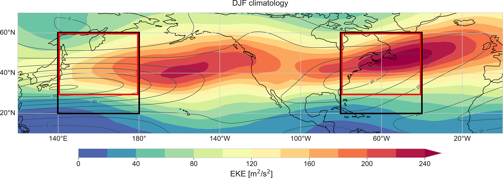
图 1 DJF 气候态：灰色等值线为 250 hPa 低通滤波纬向风（等值线间隔 10 m s^{−1}），填色为 300 hPa EKE（单位 m^{2} s^{−2}）。黑框为背景急流分析区域，红框为 EKE 平均区域。
Figure 1 DJF climatology of low-pass filtered 250 hPa zonal wind in grey contours (contour interval of 10 m s^−1) and EKE on 300 hPa in shading (in m^2 s^−2). The black box represents the analysis domain for the background jet and the red box represents the EKE averaging domain.
区域与变量选取
Choice of domain and variables
在每一个 6 小时时次，分别对北太平洋与北大西洋风暴路径定义一个代表性的纬向背景急流速度 U。为此，我们在图 1 黑框内计算 250 hPa 低通滤波纬向风的纬向平均后的纬度最大值，北大西洋为 (40–80° W, 20–60° N)，北太平洋为 (140–180° E, 20–60° N)。该度量旨在量化急流核强度，而经向急流结构则通过第4节中额外评估急流宽度的影响来计入。急流宽度在每一个关注经度上量化为：在 10–70° N 内，低通滤波纬向气流超过最大值一半的纬度跨度（以纬度度数计）。最终急流宽度是各区域内每一经度上急流宽度的纬向平均。EKE 分别在图 1 北太平洋与北大西洋红框内、于 300 hPa 上平均。U 与 EKE 的垂直层次取为各框内 DJF 气候态平均后变量最大的气压层。若在与急流相同的层次上分析 EKE，结论相同。如图 1 所示，北太平洋与北大西洋的分析区域代表风暴路径入口区，其定义使其捕捉气候态急流最大值的东缘。将区域东移 10° 或向东扩展 20° 的敏感性试验对结果无显著影响。
At every 6-hourly time step, a representative zonal background jet velocity U is defined separately for the NP and NA storm tracks. To this end, we calculate the zonally averaged latitudinal maximum of the low-pass filtered zonal wind on 250 hPa within the black boxes in Fig. 1 located at (40–80° W, 20–60° N) for the NA and (140–180° E, 20–60° N) for the NP. With this measure, we aim to quantify the jet core strength, while the meridional jet structure is accounted for by additionally assessing the effect of jet width in Sect. 4. The jet width is quantified at each longitude of interest as the number of degrees latitude around the jet maximum where the low-pass filtered zonal flow exceeds half the maximum value within 10–70° N. The final jet width is a zonal average over the jet widths at each longitude within each domain. The EKE is averaged on 300 hPa in the red boxes in Fig. 1 for the NP and NA, respectively. The vertical levels for U and EKE are chosen as the pressure levels where the variables are largest in the DJF climatology averaged within the boxes. If we analysed EKE on the same level as the jet, this would yield the same findings. As visible in Fig. 1, the analysis domains in the NP and NA represent the storm track entrance regions and are defined such that they capture the eastern edge of the climatological jet maximum. Sensitivity tests using domains shifted 10° or extended 20° to the east showed no significant impact on the results.
气旋视角
Cyclone perspective
气旋统计与气旋中心合成基于地面气旋路径，路径由 Wernli and Schwierz (2006) 提出、并经 Sprenger et al. (2017) 改进的等值线识别与追踪方法计算。我们筛选相对强的气旋：最低海平面气压低于 990 hPa，并在北太平洋 (100° E–120° W, 20–80° N) 或北大西洋 (100–0° W, 20–80° N) 内至少停留 24 h。990 hPa 阈值在两洋盆强度分布左偏的峰值附近截断（见 Lodise et al., 2022; Neu et al., 2013 的图 3），从而保证比较强度相近的气旋。为排除没有清晰加强阶段的气旋，我们聚焦生命史中至少加深 10 hPa 的气旋路径。最后，从 6 小时路径资料中选取以该时次为中心的 12 小时海平面气压加深最大的时次。最大加深时中心位于北太平洋与北大西洋红框内的气旋被纳入气旋中心合成。这样可以选出对该区域内 EKE 场贡献较大的气旋。
Cyclone statistics and cyclone-centered composites are based on surface cyclone tracks computed with the contour identification and tracking method introduced in Wernli and Schwierz (2006) and refined in Sprenger et al. (2017). We filter for relatively strong cyclones reaching a minimum SLP below 990 hPa that spend a minimum of 24 h in the NP (100° E–120° W, 20–80° N) or NA (100–0° W, 20–80° N), respectively. The threshold of 990 hPa truncates the left-skewed intensity distribution near its peak for both basins (see Fig. 3 in Lodise et al., 2022; Neu et al., 2013), and ensures that cyclones of similar intensities are compared. To exclude cyclones that do not exhibit a clear intensification phase we focus on cyclone tracks that intensify by at least 10 hPa throughout their life-cycle. Finally, from 6-hourly track data, we select the time step around which the centered 12-hourly SLP intensification is maximal. Cyclones whose center at maximum intensification is within the red NP and NA domains, respectively, are included in the cyclone-centered composites. This allows to select cyclones that contribute strongly to the EKE field within this domain.
两个时间尺度上的基本急流-风暴路径关系
The fundamental jet-storm track relationship on two timescales
本节考察北太平洋与北大西洋区域急流与风暴路径之间的关系，并探究以往研究所报告的两洋盆该关系差异背后的机制。我们引入一种计入不同变率时间尺度的新方法，用以研究 250 hPa 背景急流强度 U 与 300 hPa EKE 的关系，从而在北太平洋与北大西洋得到一致的关系。
This section examines the relationship between the jet stream and storm tracks in the NP and NA regions and investigates the mechanisms underlying the differences in this relationship between the two basins reported in previous studies. A new method that accounts for different timescales of variability is introduced to study the relationship between the background jet strength U at 250 hPa and EKE at 300 hPa, which yields a consistent relationship in the NP and NA.
月平均的影响
The effect of monthly averaging
我们首先用西太平洋与西大西洋上每隔 10 d 评估的 30 d 平均统计，分析 U 与 EKE 的关系。该方法复现 Nakamura (1992) 的做法，后者用 31 d 滑动平均把斜压波活动（以高通滤波高层位势高度量化）与背景急流强度相联系。用于量化背景急流与斜压波振幅的区域和诊断量在本研究与 Nakamura (1992) 之间略有不同。尤其是，本研究基于固定矩形区域内的统计（见第2.2节），而 Nakamura (1992) 沿瞬时风暴路径轴取样背景急流属性，因而观测到的急流速度略有差异。
We first analyse the relationship between U and EKE using statistics based on 30 d means evaluated at 10 d intervals in the western NP and western NA. This approach replicates the methodology of Nakamura (1992), who used 31 d moving averages to relate baroclinic wave activity, quantified by high-pass-filtered upper-level geopotential height, to the background jet strength. The domain and diagnostic measures used to quantify the background jet and baroclinic wave amplitude differ slightly between our study and the one by Nakamura (1992). In particular, our study is based on statistics within a fixed rectangular domain (described in Sect. 2.2) while Nakamura (1992) sampled the background jet properties along the instantaneous storm track axis, which leads to slight differences in the observed jet speeds.
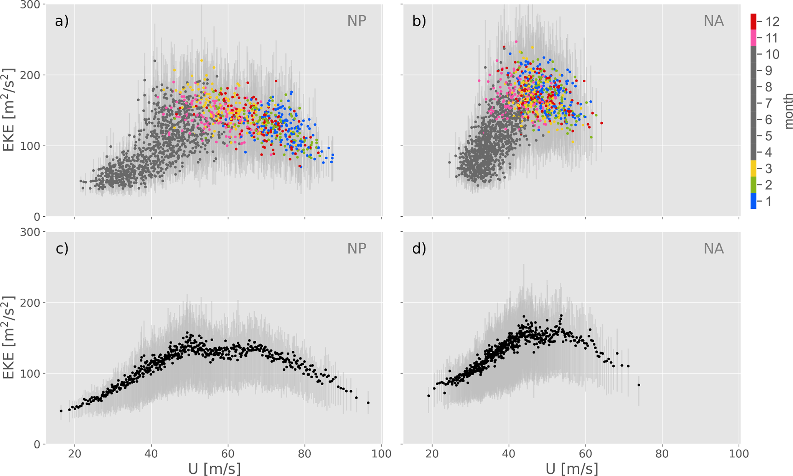
图 2 1980–2023 年北太平洋 (a, c) 与北大西洋 (b, d) 250 hPa 上 10 d 低通滤波纬向风的空间最大值（U）与 300 hPa 空间平均 EKE 的散点图。两个风暴路径区各自的 U 与 EKE 区域见第2.2节。(a) 与 (b) 中每一点为 30 d 平均（即连续 120 个 6 小时时次），颜色表示平均窗口中心日期所在月份。30 d 滑动平均按 10 d 间隔取样。(c) 与 (d) 中每一点为对 U 相近的 120 个时次分箱后的平均。每个平均窗口 (a, b) 或相近 U 分箱 (c, d) 内时次的四分位距以浅灰表示。
Figure 2 Scatter plots of spatial maximum of the 10 d low-pass filtered zonal wind on 250 hPa (U) and spatially averaged EKE on 300 hPa in the NP (a, c) and NA (b, d) for the years 1980–2023. The respective U and EKE domains in the two storm track regions are specified in Sect. 2.2. In panels (a) and (b), each data point is an average over 30 d (i.e., 120 consecutive 6-hourly time steps) and coloured by the month of the central date of the averaging window. The 30 d moving averages are sampled at 10 d intervals. In panels (c) and (d), each data point is an average taken over bins of 120 time steps with similar values of U. The inter-quartile range of the time steps in each averaging window (a, b) or bin of similar values of U (c, d) is shown in light gray.
图 2a, b 中每一点表示每隔 10 d、围绕中心日期计算的 30 d 平均。点的颜色按平均时段中心日期所在月份编码。每个 U 平均窗口的 EKE 四分位距以浅灰表示。与 Nakamura (1992) 的发现一致，北大西洋中 U 与 EKE 呈正相关。仅在大 U 时略现负关系。相反，同样与 Nakamura (1992) 一致，北太平洋的 EKE 随 U 增大直至约 70 m s^{−1} 的阈值急流速度，超过该阈值后 EKE 随急流增强而减小。该阈值与 Nakamura (1992) 报告的不同，原因是背景急流速度的定义不同。一个重要差异是，超过 70 m s^{−1} 阈值的平均急流速度在北大西洋很少出现。两洋盆的另一重要差异是：北太平洋最强急流速度主要出现在 1 月与 2 月，而北大西洋最高急流速度出现在整个延伸冬季（见图 2a, b 中彩色点的分布）。这表明两洋盆急流的时间变率不同，后续分析将进一步探讨。
Each data point in Fig. 2a, b represents a 30 d mean computed around a central date every 10 d. The points are colour-coded according to the month of the central date of the averaging period. The inter-quartile range of EKE for each averaging window of U is shown in light gray. Consistent with the findings of Nakamura (1992), a positive correlation between U and EKE is observed in the NA. A slightly negative relationship is only hinted for large U. In contrast, and also consistent with Nakamura (1992), the NP exhibits an increase in EKE with U up to a threshold jet velocity of approximately 70 m s^−1, beyond which EKE decreases as jet strength increases. This threshold differs from that reported in Nakamura (1992), due to the different definitions of background jet velocity. Notably, mean jet velocities exceeding the threshold of 70 m s^−1 are rarely observed in the NA. Another important difference between the two basins is that the strongest jet velocities in the NP occur predominantly in January and February, whereas the highest jet speeds in the NA occur throughout the entire extended winter season (see distribution of coloured points in Fig. 2a, b). This suggests that the temporal variability of the jet differs between the NP and NA, which is further explored in the subsequent analysis.
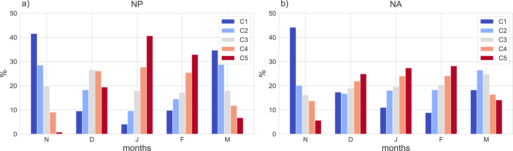
图 3 延伸冬季各月落入 5 个急流强度类别的时次百分比（C1 为最弱急流，C5 为最强急流）：(a) 北太平洋，(b) 北大西洋。
Figure 3 Percentage of time steps in each extended winter month that fall into the 5 categories of jet strength (with C1 containing the weakest and C5 the strongest jets) for (a) the NP and (b) the NA.
为分析急流强度变率，我们将急流速度分为五个等容量类别。类别 1（C1）包含延伸冬季（11–3 月）中 10 d 低通滤波急流速度最低的 20% 时次，类别 5（C5）包含最高的 20%。图 3 给出这些类别在北太平洋与北大西洋延伸冬季各月中的贡献。在北太平洋，最强急流类别（C4 与 C5）约占 1 月时次的 70%，而较弱类别在 11 月与 3 月占优。这表明急流强度存在显著的月际变率。相比之下，北大西洋的急流速度分布不同。1 月强急流类别（C4 与 C5）仅约占时次的 50%，仍有许多弱急流时次。在 DJF，北大西洋的类别分布在各月间相当均匀。这表明北大西洋急流强度更多在单月内部变化，而北太平洋急流主要以月际变化为主。这些不同变率时间尺度的来源将在第3.3节讨论。
To analyse the variability of jet strength, we classify jet velocities into five equally sized categories. Category 1 (C1) comprises the 20 % time steps with lowest 10 d low-pass filtered jet velocities during the extended winter season (November–March), while category 5 (C5) includes the highest 20 %. Figure 3 illustrates the contributions of these categories across the extended winter months in the NP and NA. In the NP, the strongest jet categories (C4 and C5) account for approximately 70 % of the time steps in January, whereas weaker jet categories dominate in November and March. This indicates a pronounced month-to-month variability in jet strength. By contrast, the NA exhibits a different distribution of jet velocities. In January, the strong jet categories (C4 and C5) make up only about 50 % of the time steps, leaving many time steps with weak jet velocities. In DJF, the category distribution in the NA is rather uniform across months. This suggests that the jet strength in the NA varies more within individual months, whereas in the NP the jet varies predominantly from month to month. The origin of these different timescales of variability will be discussed in Sect. 3.3.
北大西洋急流在月内的大变率在图 2a, b 中留下印记：月尺度平均掩盖了 EKE 与急流强度之间潜在的瞬时关系。在北大西洋，延伸冬季的每一个月平均点都代表很宽的急流速度范围，几乎覆盖延伸冬季观测到的大部分取值。北大西洋平均箱内这种相对较大的急流强度变率，掩盖了 EKE 对短时间尺度急流强度变化的真实响应。该掩盖效应在北太平洋较弱，但也存在。为应对简单月尺度平均带来的局限，下一节引入一种替代平均方法。
The large variability of the NA jet within months has an imprint in Fig. 2a, b, where the effects of monthly-scale averaging obscure the underlying instantaneous relationship between EKE and jet intensity. In the NA, each monthly mean data point during extended winter represents a wide range of jet velocities, spanning most of the values observed in extended winters. This large relative jet strength variability within averaging bins in the NA masks the true signal of how EKE responds to variations in jet strength on short timescales. The masking effect is weaker, but also present, in the NP. To tackle the limitations imposed by simple monthly-scale averaging, an alternative averaging approach is introduced in the following section.
另一种平均方法
A different averaging method
EKE 就其定义而言是高度变化的度量，因为它量化了时间尺度最长至 10 d 的相对平均流偏差所对应的动能。在高层，EKE 呈现显著起伏，并在瞬变槽脊过境时达到峰值，其中槽往往与地面气旋相伴（例如见 Schemm et al., 2021 的图 4）。根据斜压不稳定理论，气旋及其相伴高层槽脊在高斜压性条件下应最有效地加强。又因热成风关系，这与背景急流中的强垂直切变以及高层通常较高的风速相联系。然而，即使条件有利于气旋发展，个别时次也可能既没有气旋增长，也没有显著的高层槽或脊。因此，有利于气旋增长的时段既包含域内无气旋、因而 EKE 偏低的时次，也包含气旋及其相伴高层槽脊穿越该区域、因而 EKE 偏高的时次。由于 EKE 变率很大，多数研究并不直接把急流强度与个别时次的 EKE 相联系，而是像 Nakamura (1992) 以及图 2a, b 那样，对周至月的时段作时间平均。以下分析保持与图 2a, b 相同的平均时次数目，以应对高变率问题。但不再对连续时次平均，而是按相近急流速度分箱，类似于前面引入的五个急流强度类别。图 4 用一段简短示例时间序列，把新平均方法与图 2a, b 及 Nakamura (1992) 所用的常规时间滑动平均作对比。在常规方法中，资料被分成十个重叠的时间箱（T1–T10），每箱含 120 个时次（对应 30 d 的 6 小时资料）。对真实资料这样平均，得到图 2a, b 中的彩色点。相反，新平均方法按时次的急流速度 U 而非时间来组织时次。时次按 U 排序，再划分为急流速度相当的箱，每箱样本数与时间箱（T1–T10）相同。对 U 箱不使用滑动平均，以免人为增大各箱平均之间的相关。对图 4 所示示例时间序列，该步骤得到四个急流速度箱（U1–U4），以红色标出。
EKE is, by definition, a highly variable measure, as it quantifies the kinetic energy associated with deviations from the mean flow on timescales up to 10 d. At upper levels, EKE exhibits pronounced fluctuations, peaking with the passage of transient troughs and ridges, where the former are often associated with surface cyclones (see for example Fig. 4 in Schemm et al., 2021). According to baroclinic instability theory, cyclones and their associated upper-level troughs and ridges are expected to intensify most efficiently under conditions of high baroclinicity. In turn, because of the thermal wind relationship, this is related to strong vertical shear in the background jets and typically high wind speed at upper levels. However, even when conditions are favourable for cyclone development, individual time steps may not exhibit cyclone growth nor a pronounced upper-level trough or ridge. Consequently, periods conducive to cyclone growth contain both instances of low EKE when no cyclone is present within the domain and instances of high EKE when a cyclone, along with its associated upper-level troughs and ridges, traverses the region. Due to the substantial variability in EKE, most studies do not directly relate jet strength to EKE at individual time steps but instead apply temporal averaging over weeks or months, as in Nakamura (1992) and Fig. 2a, b. The following analysis maintains the same number of time steps for averaging as in Fig. 2a, b to address the issue of high variability. However, rather than averaging over consecutive time steps, the data are now binned according to similar jet velocities, analogously to the five jet strength categories introduced earlier. Figure 4 illustrates the new averaging method in comparison to the conventional temporal running means employed in Fig. 2a, b and Nakamura (1992), using a short example time series. In the conventional approach, the data are divided into ten overlapping temporal bins (T1–T10), each containing 120 time steps (corresponding to 30 d of 6-hourly data). Averaging over such bins for the real dataset yields the coloured dots in Fig. 2a, b. In contrast, the new averaging method organises the time steps according to jet velocity U rather than temporally. The time steps are sorted by U and subsequently partitioned into bins of comparable jet velocity, each containing the same number of samples as the temporal bins (T1–T10). For the U-bins no sliding means are applied in order to avoid artificially increasing correlations between the individual bin averages. For the example time series shown in Fig. 4, this procedure yields four jet-velocity bins (U1–U4), indicated in red.
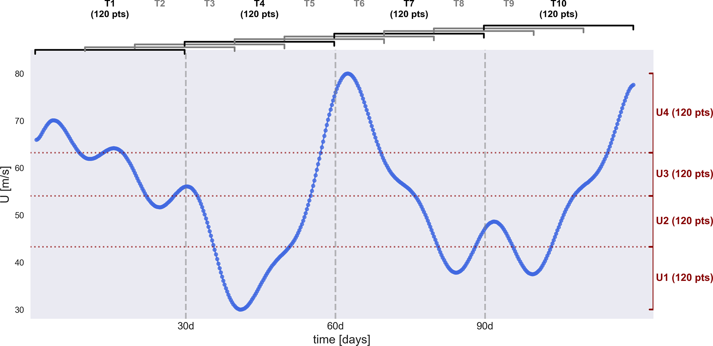
图 4 两种平均方法的示意。蓝点表示图 2a, b 所示背景急流强度 U 的示例时间序列。黑框与灰框标出用于计算 30 d（120 个时次）滑动平均的时间箱。红框标出按相近 U 值分组、各含 120 个时次的箱，对其平均得到图 2c, d 的结果。
Figure 4 Schematic illustrating the two averaging methods. The blue dots represent an example time series of background jet strength U shown in Fig. 2a, b. The black and gray brackets indicate the temporal bins used to compute 30 d (120 time step) running means. The red brackets indicate bins containing 120 time steps grouped by similar U values, which are averaged to produce the results shown in Fig. 2c, d.
将新分箱方法应用于完整的 43 年时间序列，并在每箱内平均 U 与 EKE，得到图 2c, d。图 2a, b 及 Nakamura (1992) 在北太平洋看到的非线性关系，在图 2c 中更加清晰。北大西洋先前主要表现为急流强度与 EKE 的正相关，新分箱方法则揭示出与北太平洋相似的非线性关系，当平均急流速度超过 55 m s^{−1} 时出现明显的负关系。四分位距（浅灰填色）表明平均箱内 EKE 变率（图 2c, d）仍然很大，说明仅凭背景急流强度只能解释总体 EKE 变率的一部分。剩余变率可部分归因于其瞬变性质，如上所述。不过，给定背景急流强度下，EKE 变率的一个重要部分可由其他急流特征解释，将在后续各节讨论。
Applying the new binning method to the full 43-year time series and averaging U and EKE within each bin yields the results presented in Fig. 2c, d. The non-linear relationship observed in Fig. 2a, b and Nakamura (1992) for the NP is now even clearer in Fig. 2c. While the NA previously exhibited a predominantly positive correlation between jet strength and EKE, the new binning approach reveals a nonlinear relationship similar to the one in the NP, with a distinct negative relationship emerging for averaged jet velocities exceeding 55 m s^−1. The inter-quartile ranges (light gray shading) show that the variability of EKE within the averaging bins (Fig. 2c, d) remains large, which underlines that the background jet strength alone can only explain part of the overall EKE variability. The remaining variability can partly be attributed to its transient nature, as elaborated above. However, an important portion of the EKE variability for a given background jet strength can be explained by additional jet characteristics, which will be discussed in the following sections.
这种替代平均方法有多项优点。第一，通过把急流速度相近的时次归为一组，它避免了在一个月内可能出现的、跨越很宽急流强度范围的平均所造成的信号掩盖。第二，该方法确保偶发的高急流速度被单独表示，而不是被夹在短暂高 U 时段两侧、由较低 U 时次主导的平均所掩盖。因此，图 2c, d 最右侧稀疏分布的数据点更准确地表示极端急流强度下的急流-风暴路径关系。
The alternative averaging method bears multiple advantages. First, by grouping time steps with similar jet velocities, it avoids the issue of signal masking that arises when averaging over a wide range of jet strengths that potentially occur at different days within a month. Second, this approach ensures that rare occurrences of high jet velocities are represented separately, rather than being masked within averages dominated by time steps with lower values of U flanking transient period of high U. As a result, the sparsely distributed data points on the far right of Fig. 2c, d provide a more accurate representation of the jet–storm track relationship at extreme jet strengths.
两个时间尺度，两种关系
Two timescales, two relationships
为理解图 2c, d 中非线性关系如何出现，我们分别考察各月的瞬时 U–EKE 关系。1 月与 7 月的回归线见图 5a, b。1 月相关在北太平洋与北大西洋分别为 −0.38 与 −0.23，7 月为 −0.04 与 −0.17。为直观表示 U–EKE 关系及所解释的变率份额，把第3.2节引入的平均方法分别应用于这两个月的时次。对每个月，将 1980–2023 年全部时次按背景急流强度分箱。所得平均与四分位距与回归线一并给出。1 月平均呈现清晰的负关系，但四分位距很大，表明背景急流强度仍未解释 EKE 变率的很大一部分，这也说明相关偏低，尤其在北大西洋。尽管如此，北大西洋所有月份的相关均在 1% 水平上显著，北太平洋除 7 月与 8 月外亦然。显著性用 t 检验评估，有效样本量按滞后 1 自相关调整。图 5c, d 把所有月份的回归线（按颜色编码）叠加在先前图 2c, d 的结果上，以便直接比较。
To understand how the non-linear relationship in Fig. 2c, d emerges, the instantaneous U-EKE relationship is studied for the different months separately. The resulting regression lines for January and July are shown in Fig. 5a, b. The correlations in January are -0.38 and -0.23 for the NP and NA, respectively, and in July -0.04 and -0.17. To visually represent the U-EKE relationship and the explained portion of the variability, the averaging method introduced in Sect. 3.2 is applied to the time steps of the two months separately. For each month, all time steps for the years 1980–2023 are binned according to the background jet strength. The resulting averages and inter-quartile ranges are depicted in addition to the regression lines. While the averages exhibit a clear negative relationship in January, the inter-quartile-ranges are large, indicating that a large portion of the EKE variability is still not explained by the background jet strength, which explains the low correlations, especially in the NA. Nonetheless, the correlations are significant at the 1 % level for all months in the NA, and for all months except July and August in the NP. Significance was assessed using a t-test, with the effective sample size adjusted for lag-1 autocorrelation. In Fig. 5c, d the regression lines are overlaid for all months (colour-coded) onto the results previously shown in Fig. 2c, d, allowing for direct comparison.
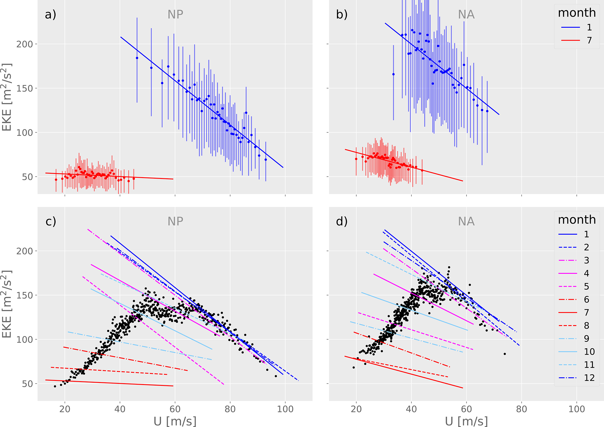
图 5 (a, b) 北太平洋与北大西洋区域内，1 月（蓝）与 7 月（红）250 hPa 上 10 d 低通滤波最大纬向风（U）与 300 hPa 空间平均 EKE 的瞬时回归线。数据点表示与图 2c, d 类似、按相近 U 分箱的平均与四分位距，但分别针对这两个月。(c, d) 与 (a)、(b) 相同，但给出所有日历月的回归线，并叠加图 2c, d 的分箱平均。给出 1980–2023 年北太平洋 (a, c) 与北大西洋 (b, d) 的结果。西部洋盆各自的 U 与 EKE 区域见第2.2节。
Figure 5 (a, b) Regression lines of instantaneous January (blue) and July (red) 10 d low-pass filtered maximum zonal wind at 250 hPa (U) and spatially averaged EKE at 300 hPa in the NP and NA domains, respectively. The data points represent averages and inter-quartile ranges of bins with similar values of U as in Fig. 2c, d but for the two months individually. (c, d) Regression lines as in panels (a) and (b) for all calendar months separately superimposed on binned averages from Fig. 2c, d. Shown are results for the NP (a, c) and NA (b, d) for the years 1980–2023. The respective U and EKE domains in the western basins are specified in Sect. 2.2.
结果表明，在月内尺度上，EKE 通常随急流增强而减小。这一负关系从夏季到冬季加强，表现为回归线斜率幅度增大，在北太平洋尤为明显。此外，各日历月对应的整条回归线从夏季到冬季向更高的 U 与 EKE（图的右上角）移动，但北太平洋的 DJF 例外，其移动主要朝向更高的 U。这一行为可解释为两个不同时间尺度上的 U–EKE 过程。向更高 U 与 EKE 的季节性移动可用斜压不稳定理论解释：从夏季到冬季，背景斜压性与急流速度增大，斜压增长增强，风暴路径变强。这是发生在季节尺度上的第一个过程。第二个过程发生在月内尺度，造成各日历月回归线的负斜率。
The results indicate that EKE generally decreases with increasing jet strength on sub-monthly timescales. This negative relationship strengthens from summer to winter, as evidenced by the increasing slope magnitude of the regression lines, especially in the NP. Additionally, the entire regression lines corresponding to the individual calendar months shift toward higher U and EKE (the upper-right corner of the diagram) from summer to winter, except for DJF in the NP, where the shift is predominantly toward higher U. This behavior can be interpreted as the result of two distinct U–EKE processes operating on different timescales. The seasonal shift toward higher U and EKE can be explained by baroclinic instability theory: as background baroclinicity and jet velocities increase from summer to winter, baroclinic growth is enhanced, leading to stronger storm tracks. This constitutes the first process, occurring on seasonal timescales. The second process occurs on sub-monthly timescales and is responsible for the negative slope observed in the regression lines for individual calendar months.
高 U 与低 EKE 共存、以及低 U 与高 EKE 共存，很可能反映斜压转换的结果。该过程把能量从平均有效位能转移到涡动能量，从而降低背景斜压性（因而降低 U）并促进涡动增长。因此，斜压转换增强的时段之后是减弱的 U 与增大的 EKE。相反，斜压转换偏弱的时段允许斜压性再次建立，导致高 U 与低 EKE。围绕 U 下降时次合成的 U 与 EKE 时间演变见补充材料图 S1，支持上述时间演变。该行为在一定程度上与 Ambaum and Novak (2014) 针对风暴路径入口区提出的非线性振子模型一致。不过，该模型高度理想化，无法解释北太平洋隆冬观测到的高 U、低 EKE 准持续状态。这种准持续状态提示存在一种强急流抑制 EKE 增长的机制，这在引言所综述的隆冬抑制文献中已广泛讨论。这里的一个关键结果是：用新平均方法，几乎在所有日历月、并在两个风暴路径区，都可以识别出 U 与 EKE 之间的负月内关系。
The co-occurrence of high U with low EKE and conversely low U and high EKE likely reflects the result of baroclinic conversion. This process transfers energy from the mean available potential energy to the eddy energy, thereby reducing the background baroclinicity (and hence U) while promoting eddy growth. As a result, periods of enhanced baroclinic conversion are followed by a weakened U and increased EKE. In contrast, periods of low baroclinic conversion allow for baroclinicity to build up again, leading to high U and low EKE. The temporal evolution of U and EKE, composited around time steps when U decreases, is shown in Fig. S1 in the Supplement and supports the described temporal evolution. This behavior is, to some extent, consistent with the nonlinear oscillator model proposed by Ambaum and Novak (2014) for the storm track entry regions. However, this model is highly idealized and it cannot explain the quasi-persistent state of high U and low EKE observed in the NP during midwinter. This quasi-persistent state suggests a suppression mechanism by which a strong jet inhibits EKE growth, as widely discussed in the midwinter suppression literature, summarized in the introduction. A key result here is, however, that a negative sub-monthly relationship between U and EKE can be identified with the new averaging method in almost all calendar months and in both storm track regions.
U–EKE 关系的季节差异还提示影响 EKE 的额外机制：虽然我们预期 EKE 会因平均急流速度差异而从夏季到冬季总体增大，但尚不清楚为何在给定背景急流速度（例如 40 m s^{−1}）下，1 月的预期 EKE（由图 5c 中 x = 40 m s^{−1} 处深蓝色实线的 y 值给出）高于 7 月（红色实线）。这表明，除背景急流强度外，急流特征的变化也造成 U–EKE 关系的季节差异。这一方面将在第4节进一步讨论。
An additional mechanism influencing EKE is also suggested by the seasonal differences in the U-EKE relationship: While we expect an overall increase of EKE from summer to winter due to differences in the averaged jet velocities, it is unclear, why for a given background jet velocity (e.g., 40 m s^−1), the expected EKE is higher in January (given by the y-value of the solid dark blue line at x = 40 m s^−1 in Fig. 5c) than in July (given by the solid red line). This suggests variations in jet characteristics beyond the background jet strength contributing to the seasonal differences in the U-EKE relationship. This aspect will be discussed further in Sect. 4.
至此结果表明，U–EKE 关系在北太平洋与北大西洋本质上相似。在两个洋盆中，急流强度与 EKE 的关系都取决于分析的时间尺度。北太平洋与北大西洋的主要区别在于急流变率的时间尺度，而这又导致月平均下 U–EKE 关系的表观差异。这里引入的替代平均方法显著缩小了这些差异，并对底层过程给出更一致的图景，下一小节将进一步讨论。
The results presented so far demonstrate that the U–EKE relationship is fundamentally similar in the NP and NA. In both basins, the relationship between jet strength and EKE depends on the timescale of analysis. The primary distinction between the NP and NA lies in the timescale of jet variability, which, in turn, leads to the apparent differences in the U–EKE relationship observed with monthly averaging. The application of the alternative averaging method, introduced here, substantially reduces these differences and yields a more consistent picture of the underlying processes, as further discussed in the next subsection.
最终，图 2c, d 与图 5c, d（黑点）中观测到的非线性关系，是上述两个不同时间尺度过程的合成效应。图 5c, d 中每一个黑点表示对 1980–2023 年所有月份与年份中、急流速度落在特定 U 值范围内的 120 个时次的平均。这些时次可以来自不同年份与月份。图 5 中月回归线的延伸范围表明哪些 U 值出现在哪些月份。例如，在北太平洋，6、7、8、9 月包含 U = 40 m s^{−1} 的时次。因此，U = 40 m s^{−1} 处的黑点包含这四个月的时次。相反，U = 70 m s^{−1} 处的黑点主要由延伸冬季的时次构成。因此，U = 40 m s^{−1} 与 U = 70 m s^{−1} 之间 EKE 的增大可归因于贡献月份从夏季转向冬季，也就是季节关系。相反，U = 90 m s^{−1} 处的黑点完全代表 DJFM 的时次。
Eventually, the nonlinear relationship observed in Figs. 2c, d and 5c, d (black dots) emerges as the combined effect of the two processes on different timescales discussed above. Each black dot in Fig. 5c, d represents an average over 120 time steps selected from all months and years between 1980 and 2023, where jet velocities fall within a specific range of U values. These time steps may originate from different years and months. The extent of the monthly regression lines in Fig. 5 indicates which U values are present in which months. For example, in the NP, June, July, August, and September include time steps with U = 40 m s^−1. Consequently, the black dot at U = 40 m s^−1 contains time steps from all four of these months. In contrast, the black dot at U = 70 m s^−1 primarily consists of time steps from the extended winter months. The increase in EKE between U = 40 m s^−1 and U = 70 m s^−1 can therefore be attributed to a shift of the contributing months from summer to winter, and therefore the seasonal relationship. In contrast, the black dot at U = 90 m s^−1 exclusively represents time steps from DJFM.
图 5c, d 表明，U = 70 m s^{−1} 与 U = 90 m s^{−1} 之间 EKE 的下降与 DJFM 的回归线重合，说明这一减小与 U 和 EKE 之间的负月内关系有关，而该关系在冬季尤为显著。因此，图 5 中从较小 U 到中等 U 的 EKE 增大，来自 EKE 从夏季到冬季的季节性增大。相反，从中等 U 到高 U 的 EKE 减小，来自 U 与 EKE 的月内负关系。总体 U–EKE 关系（黑点）变号的阈值，不应被理解为关系发生根本转变的严格物理边界。它标志着：在较低 U 值处季节效应占主导，而在较高 U 值处月内效应更有影响，因为这些高 U 通常只出现在较少的月份。这一解释也说明了北太平洋与北大西洋阈值速度的差异。
Figure 5c, d shows that the decline in EKE between U = 70 m s^−1 and U = 90 m s^−1 coincides with the regression lines for DJFM, indicating that this decrease is associated with the negative sub-monthly relationship between U and EKE, which is particularly pronounced in winter. Thus, the increase in EKE from small to intermediate U values in Fig. 5 results from the seasonal increase of EKE from summer to winter. In contrast, the EKE decrease from intermediate to high U values arises due to the sub-monthly negative relationship between U and EKE. The threshold at which the sign of the overall U–EKE relationship (black dots) changes should not be interpreted as a strict physical boundary at which the relationship fundamentally shifts. Rather, it marks the transition from seasonal effects dominating at lower U values to sub-monthly effects becoming more influential at higher U values as these typically occur only in a reduced number of months. This interpretation also explains the differences in threshold velocities between the NP and NA.
比较北太平洋与北大西洋
Comparing the North Pacific and North Atlantic
我们现在对两个区域的急流-风暴路径关系作更细致、技术上也更深入的考察。图 6 从急流强度（图 6a）、EKE（图 6b）、急流–EKE 相互作用（图 6c）与急流位置（图 6d）总结北太平洋与北大西洋的异同。这些度量的方差与协方差，对全年以及专门对延伸冬季（NDJFM）计算，可以在没有交叉项的情况下分解（推导见附录 A）为两个分量：(i) 月平均相对总平均的方差（此后称为月际方差）；(ii) 各日历月内个别时次相对月平均的方差（此后称为月内方差）。这里的月平均指 43 年资料中某一给定日历月全部时次的平均。图 6 顶行数字给出全年与延伸冬季的总方差与协方差。第二行给出 U 与 EKE 的相关，它们均统计显著。图 6 中的柱相对于表示北太平洋与北大西洋各自全年的第一根柱作了归一化。每根柱的斜线部分表示月际方差/协方差的贡献（附录 A 中的项 (ii)/(iv)），彩色部分表示月内方差/协方差的贡献（附录 A 中的项 (i)/(iii)）。在图 6c 中，斜线柱跨越蓝色柱，因为二者符号相反：月际协方差（斜线柱）为正，月内协方差（蓝色柱）为负，从而使总协方差减小。
We now turn to an even more detailed and technically more involved investigation of the jet-storm track relationship in the two regions. Figure 6 summarizes the similarities and differences between the NP and NA in terms of jet strength (Fig. 6a), EKE (Fig. 6b), jet–EKE interaction (Fig. 6c), and jet position (Fig. 6d). The variances and covariances of these measures, calculated for the entire year as well as specifically for the extended winter season (NDJFM), can be decomposed – without cross terms (see Appendix A for a derivation of the decomposition) – into two components: (i) the variance of monthly means relative to the total mean (henceforth referred to as variance between months), and (ii) the variance of individual time steps within each calendar month relative to the monthly mean (henceforth referred to as within-month variance). Monthly means here refer to an average over all time steps in the 43-year dataset within a given calendar month. The numbers in the top row of Fig. 6 quantify the total variances and covariances for both the full year and the extended winter season. Additionally, the second row specifies the correlations between U and EKE, all of which are statistically significant. The bars in Fig. 6 are normalised with respect to the first bar representing the entire year for the NP and NA, respectively. The hatched portion of each bar represents the contribution of the variance/covariance between months (term ii/iv in Appendix A), while the coloured portion represents the contribution of the within-month variance/covariance (term i/iii in Appendix A). In Fig. 6c the hatched bar extends across the blue bar because of their opposite signs: The between-month covariance (hatched bar) is positive, while the within-month covariance (blue bar) is negative, resulting in a reduced total covariance.
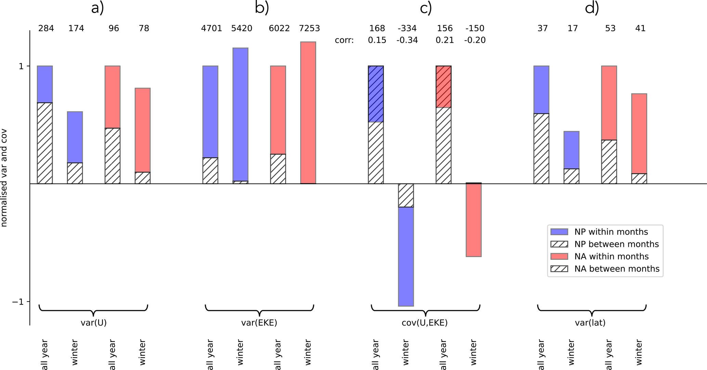
图 6 北太平洋与北大西洋区域内（定义见第2.2节）250 hPa 上 10 d 低通滤波纬向风最大值（U）与 300 hPa 平均 EKE 的方差。同时给出 U 最大值所在纬度的方差以及 U 与 EKE 的协方差。方差与协方差对全年与延伸冬季（NDJFM）计算，北太平洋为蓝色，北大西洋为红色。柱按各自洋盆的全年总方差归一化。斜线部分表示月际方差，彩色部分（北太平洋蓝、北大西洋红）表示月内方差。第一行给出绝对总方差与协方差，第二行给出与协方差对应的相关。
Figure 6 Variance of the maximum zonal 10 d low-pass filtered zonal wind at 250 hPa (U) and the averaged EKE at 300 hPa, computed over the NP and NA domains as specified in Sect. 2.2. Also shown are the variance of the latitude of the U maximum and the covariance between U and EKE. Variances and covariances are calculated for the entire year and the extended winter months (NDJFM) in the NP (blue) and NA (red). Bars are normalised by the total annual variance of the respective basin. The hatched portion represents the between-month variance and the coloured portion (blue for NP, red for NA) represents the within-month variance. Absolute total variances and covariances are given in the first row, while the second row specifies the correlation associated with the covariances.
U 的方差表明，北太平洋急流的变率大于北大西洋（见图 6a 顶部全年以及仅冬季的数字），这与北太平洋洋盆达到更高急流速度相一致。不过，北太平洋的年方差主要由月际变率驱动，北大西洋则不然：其方差更受月内变率主导，冬季尤其如此（比较斜线柱的范围）。该发现与图 3 的结果一致。如图 6b 所示，EKE 的总方差在北大西洋大于北太平洋，但月际与月内方差的相对贡献在两洋盆相似。由于 EKE 固有变率很大，U 与 EKE 的相关值相对较小。不过这些负相关高度显著，由 t 检验确定。注意，冬季 EKE 在北太平洋与北大西洋几乎完全由月内变率主导。其次，全年 U 与 EKE 的协方差（图 6b 所示）在北太平洋与北大西洋呈现出相似的月际与月内分离。在两个洋盆中，U 与 EKE 的月际协方差都强为正，反映由斜压不稳定支配的季节关系。这一季节关系表现为从图 5 所见的、从夏季到冬季向更高 U 与 EKE 的移动。相反，月内协方差为负，从而减小总体协方差。这一负关系在图 5 中表现为各月回归线的负斜率，反映急流强度与 EKE 的月内相互作用。就全年而言，季节效应压过月内效应。单独考察延伸冬季则揭示出北太平洋与北大西洋更强的差异。在两个洋盆中，总体 U–EKE 协方差都变为负。这是因为当只关注延伸冬季时（尤其在北大西洋），驱动正协方差的季节效应在很大程度上被去除。于是负的月内效应占主导。该效应在北太平洋强于北大西洋。此外，在北太平洋，月际协方差并未被完全去除，反而也变为负。这一现象即文献中记载的隆冬抑制，它在北太平洋被观测到，而在北大西洋明显缺席。北太平洋隆冬抑制反映的是：隆冬期间 U 保持偏高，而 EKE 在整个月份内相对两侧肩季偏低。这一减小是因为北太平洋急流在隆冬持续偏强且相对少受扰动，表现为 U 的月内变率较低。
The variance of U reveals that the NP jet exhibits greater variability compared to the NA (see numbers at the top of Fig. 6a throughout the year as well as in winter only, consistent with the higher jet velocities reached in the NP basin. However, while the yearly variance in the NP is predominantly driven by between-month variability, this is not the case for the NA, where the variance is more dominated by within-month variability, in particular during winter (compare the extent of the hatched bars). This finding is consistent with the results shown in Fig. 3. As evident in Fig. 6b, the total variance of EKE is larger in the NA compared to the NP, though the relative contributions from between-month and within-month variance are similar in both basins. Due to the inherently large variability of EKE, the correlation values between U and EKE are relatively small. However, these negative correlations are highly significant, as determined using a t-test statistic. Note that winter EKE is almost exclusively dominated by the within-month variability for both the NP and NA. Next, the covariance of U and EKE (shown in Fig. 6b) over the full year exhibits a similar separation into between-month and within-month contributions in the NP and NA. In both basins, the between-month covariance of U and EKE is strongly positive, reflecting the seasonal relationship governed by baroclinic instability. This seasonal relationship manifests as the shift toward higher U and EKE from summer to winter, as seen in Fig. 5. Conversely, the within-month covariance is negative, thereby reducing the overall covariance. This negative relationship, visible in Fig. 5 as the negative slopes of the monthly regression lines, reflects the sub-monthly interaction between jet strength and EKE. When considering the full year, the seasonal effect dominates over the sub-monthly effect. Examining the extended winter months separately reveals stronger differences between the NP and NA. In both basins, the overall U–EKE covariance becomes negative. This occurs because the seasonal effect, which drives a positive covariance, is largely removed when focusing exclusively on the extended winter months (particularly in the NA). As a result, the negative within-month effect becomes dominant. This effect is stronger in the NP compared to the NA. In addition, in the NP the between-month covariance is not entirely removed; instead, it also becomes negative. This phenomenon is what is documented as the midwinter suppression, which has been observed in the NP but is notably absent in the NA. The NP midwinter suppression reflects the fact that, in midwinter, U remains high while EKE is reduced throughout entire months compared to the surrounding shoulder seasons. This reduction occurs because the NP jet remains persistently strong and relatively undisturbed during midwinter, as evidenced by the lower within-month variability of U.
EKE 随急流增强而减小，在北太平洋与北大西洋都表现为月内尺度上的基本关系，并对应于高、低背景斜压性时段之间的振荡（U 作为其代理变量），这些时段分别以低 EKE 与高 EKE 为特征。该关系中的表观差异，在很大程度上可归因于两洋盆急流变率主导时间尺度的不同。这些差异又源于两支急流的不同性质。涡动驱动的北大西洋急流在月内尺度上经历对急流纬度与强度的强涡动–平均流反馈（Novak et al., 2015）。相反，北太平洋急流更紧密地受 Hadley 环流下沉支以及东亚上空显著行星波槽的约束，对涡动诱发的反馈更不敏感（Nakamura and Sampe, 2002; Nakamura et al., 2002; Eichelberger and Hartmann, 2007）。Hadley 环及其下沉支在隆冬最强、位置最偏南，导致相对于肩月持续更高的 U 与更低的 EKE。这在冬季内部的月演变中引入了 U 与 EKE 的负关系，而北大西洋没有这种关系，那里该关系只存在于月内尺度。两支急流响应的强烈对比可见于急流纬度的方差：如图 6 所示，冬季月内纬度方差在北大西洋明显大于北太平洋。两支急流的动力差异很可能也造成北大西洋相对于北太平洋更高的 EKE 方差，以及图 5 中更弱的月内负 U–EKE 相关。
The decrease of EKE with increasing jet strength emerges as a fundamental relationship on sub-monthly timescales in both the NP and NA and corresponds to the oscillation between periods of high and low background baroclinicity (with U acting as a proxy variable for it), which are characterized by low and high EKE, respectively. Apparent discrepancies in this relationship can largely be attributed to differences in the dominant timescales of jet variability between the two basins. These differences, in turn, arise from the distinct nature of the two jets. The eddy-driven NA jet experiences strong eddy-mean flow feedbacks on the jet latitude and strength (Novak et al., 2015) on sub-monthly timescales. In contrast, the NP jet is more tightly constrained by the descending branch of the Hadley circulation as well as a pronounced planetary-wave trough over East Asia and is less susceptible to eddy-induced feedbacks (Nakamura and Sampe, 2002; Nakamura et al., 2002; Eichelberger and Hartmann, 2007). The Hadley cell and its descending branch are strongest and furthest southward in midwinter, leading to persistently higher U and reduced EKE compared to the shoulder months. This introduces a negative relationship between U and EKE in the monthly evolution within the winter season that is not found in the NA, where such a relationship is only present on sub-monthly timescales. These strong contrasts in the jet response are evident in the variance of jet latitude, as can be seen in Fig. 6, where the wintertime latitude variance within months is shown to be markedly larger in the NA compared to the NP. The dynamical differences between the two jets likely also contribute to the higher EKE variance and the weaker negative U-EKE correlation within months observed in the NA compared to the NP in Fig. 5.
急流宽度的影响
The effect of jet width
本节考察经向急流结构对所诊断的 U 与 EKE 关系的额外影响。发现急流宽度在解释给定 U 下 EKE 的季节变化方面起显著作用，并对准季节尺度上的 U–EKE 关系也有贡献。
This section examines the additional influence of the meridional jet structure on the diagnosed relationship between U and EKE. Jet width is found to play a significant role in explaining the seasonal variations in EKE for a given U, and also contributes to the U-EKE relationship on sub-seasonal timescales.
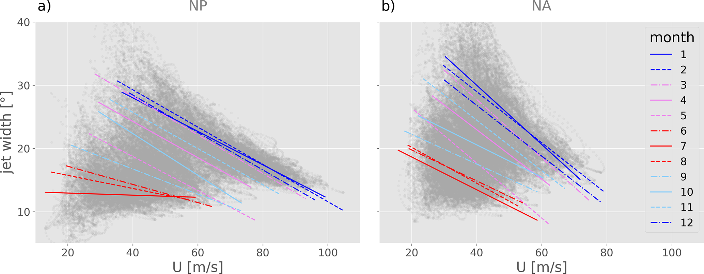
图 7 250 hPa 低通滤波纬向风 U 与急流宽度的瞬时关系，以散点图（灰点）给出：(a) 北太平洋，(b) 北大西洋。属于各月的数据点回归线以彩色给出。
Figure 7 The instantaneous relationship between low-pass filtered zonal wind on 250 hPa, U, and the jet width shown as a scatterplot (gray dots) in (a) the NP and (b) the NA. Regression lines of the data points belonging to the individual months are shown in colour.
为理解以半宽量化的急流宽度（见第2.2节）如何调节 U–EKE 关系，我们首先在季节与月内两个时间尺度上考察急流宽度与 U 的关系。图 7 以浅灰给出二者的瞬时关系，并分别对北太平洋与北大西洋叠加各月彩色回归线。两洋盆中清晰的正季节关系以及负的月内关系，与 U–EKE 关系十分相似。由日射所施加的背景强迫约束，为观测关系提供了一种理想化解释。对给定月份（或季节），可假定赤道与极地之间的差分加热为常数，从而总的赤道–极地温度差固定。在此约束下，总温度差既可以表现为较窄、局地温度梯度较强的区域，也可以表现为较宽、温度梯度较弱的区域。根据热成风平衡，局地温度梯度高的窄斜压区对应于核速度 U 高的窄急流。相反，局地温度梯度较弱的更宽斜压区意味着更宽、更弱的急流。这就解释了观测到的 U 与急流宽度之间的负月内关系。现在取固定风速。从夏季到冬季，赤道–极地温度差已知会增大。若比较 1 月与 7 月中具有相同核背景急流强度 U（例如 40 m s^{−1}）的时次，热成风平衡意味着局地经向温度梯度必须相似。然而，由于 1 月总的赤道–极地温度对比大于 7 月，高温度梯度区在冬季必须更宽。这就解释了为何在给定 U 下，冬季急流相对于夏季更宽。从另一角度看，图 7 表明宽度相当的急流在冬季强于夏季，这与北太平洋隆冬观测到的强而窄状态一致。附录 B 以北太平洋区域的显式计算，验证了基于热成风关系对急流核强度与急流宽度关系的定性解释。
To understand how the jet width, quantified by the half-width (see Sect. 2.2), modulates the U-EKE relationship, we first examine the relationship between jet width and U on both seasonal and sub-monthly timescales. Figure 7 shows the instantaneous relationship between the two variables in light gray, with regression lines for individual months overlaid in colour, separately for the NP and NA. The distinct positive seasonal relationship, along with the negative sub-monthly relationship identified in both basins, is strongly reminiscent of the U-EKE relationship. Constraints imposed by background forcing through insolation offer an idealized explanation for the observed relations. For a given month (or season) we may assume a constant differential heating between equator and pole, leading to a fixed total equator-to-pole temperature difference. Under this constraint, the total temperature difference can either manifest as a more narrow zone with relatively strong temperature gradients, or a broader zone with weaker temperature gradients. Following the thermal wind balance, a narrow baroclinic zone with high local temperature gradients translates to a narrow jet with high core velocities U. Conversely, a broader baroclinic zone with weaker local temperature gradients implies a broader and weaker jet. This explains the observed negative sub-monthly relationship between U and jet width. Now let us choose a fixed wind speed. From summer to winter the equator-to-pole temperature difference is known to increase. If we compare time steps in January and July that exhibit the same core background jet strength U (e.g., 40 m s^−1), the thermal wind balance implies that locally the meridional temperature gradient must be similar. However, as the total equator-to-pole temperature contrast in January is larger compared to July, the region of high temperature gradients must be broader in winter. This explains why for a given U, the wintertime jets are broader relative to summer. From another perspective, Fig. 7 shows that jets of comparable width are stronger in winter than in summer, consistent with the strong and narrow state of the NP jet observed in midwinter. Appendix B validates the qualitative explanation for the relationship between jet core strength and jet width based on the thermal wind relationship with explicit computations for the NP domain.
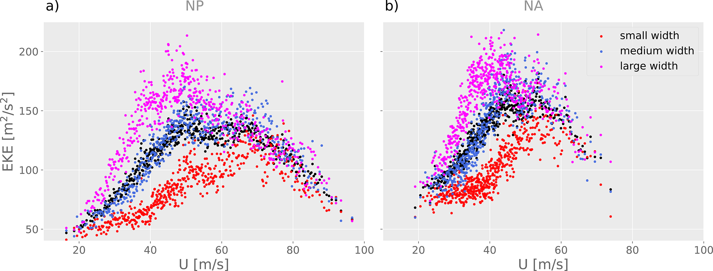
图 8 月平均 EKE 相对 U：(a) 北太平洋，(b) 北大西洋。图 2 的分箱平均以黑色给出。每个 U 箱内不同急流宽度三分位的平均以红色（窄急流）、蓝色（中等急流）与紫色（宽急流）给出。
Figure 8 Monthly mean values of EKE versus U in (a) the NP and (b) the NA. Binned averages from Fig. 2 are shown in black. Averages over terciles of different jet width for each U-bin are shown in red (narrow jet), blue (medium jet) and purple (broad jet).
比较图 2c, d 与图 7a, b 的回归线可见，EKE 与急流宽度在季节与月内两个时间尺度上都对急流强度表现出惊人相似的依赖。在固定急流核强度 U 下，从夏季到冬季观测到的 EKE 增大，可归因于伴随的急流宽度增大。如第1节所述，窄急流充当波导，限制涡动的经向范围并抑制其增长率。因此，在固定核急流强度下，更窄的夏季急流预期具有更低的 EKE。U 与急流宽度的季节关系因此可以解释 U 单独无法解释的一部分 EKE 变率。把图 2c, d 的分析加以扩展，可更清楚地看到这一效应：在已有的、各含 120 个相近 U 时次的 U 箱内，再按急流宽度分层。具体而言，每个 U 箱按急流宽度分成三个等容量子组（窄、中、宽）。这一分层使得可以在每个 U 箱内计算对应不同急流宽度的三个 EKE 平均。图 8 分别对北太平洋与北大西洋给出每个 U 箱的平均 EKE（黑色，同前）以及窄、中、宽急流宽度类别（分别为红、蓝、粉）。急流宽度提供的额外解释力立刻可见：对北太平洋 U<70 m s^{−1} 与北大西洋 U<60 m s^{−1}，EKE 对急流宽度表现出很强的额外敏感性。尤其是，固定 U 下的平均 EKE 在窄急流类别明显低于平均，在宽急流类别明显高于平均。事实上，对低至中等 U，窄急流与宽急流 EKE 平均之差可与图 2c, d 中 U 箱的四分位距相比。这意味着，在低到中等 U 下无法仅由 U 解释的相当一部分 EKE 变率，与急流宽度差异有关。如第3.3节所讨论，这些 U 值处的变率与 U–EKE 关系的季节演变相联系。
Comparing the regression lines in Figs. 2c, d and 7a, b reveals that the EKE and jet width exhibit a strikingly similar dependence on jet strength on both seasonal and sub-monthly timescales. The observed increase in EKE at fixed jet core strength U from summer to winter can be attributed to the accompanying increase in jet width. As described in Sect. 1, a narrow jet acts as a waveguide, restricting the meridional extent of eddies and limiting their growth rate. At a fixed core jet strength the narrower summer jet is thus expected to exhibit lower EKE. The seasonal relationship between U and the jet width can therefore account for a portion of the EKE variability that is not explained by U alone. This effect can be visualized more clearly by extending the analysis presented in Fig. 2c,d by further stratifying the existing U bins – each containing 120 time steps with similar U values – according to jet width. Specifically, each U bin is divided into three equally sized subgroups based on jet width (narrow, medium, and broad). This stratification allows for the calculation of three separate EKE averages corresponding to different jet widths within each U bin. Figure 8 presents the mean EKE for each U bin (black; as previously) plus for the narrow, medium, and broad jet width categories (red, blue, and pink, respectively), separately for the NP and the NA. The additional explanatory power provided by jet width is immediately evident: For U<70 m s^−1 in the NP and U<60 m s^−1 in the NA, EKE exhibits a strong additional sensitivity to jet width. In particular, the averaged EKE at a fixed U is clearly below average in the narrow jet category and above average in the broad jet category. In fact, for low to medium values of U the difference between the narrow and broad jet EKE averages is comparable to the inter-quartile range of the U-bins depicted in Fig. 2c, d. This implies that a considerable portion of the EKE variability at low and intermediate U, which cannot be explained by U alone, is associated with differences in jet width. As discussed in Sect. 3.3, the variability at these U values arises in connection with the seasonal evolution of the U–EKE relationship.
在较高 U 值，对应于图 8 中 U–EKE 曲线的下降支，按急流宽度的分层变得不那么显著。如第3.3节所讨论，这些较高速度下的 U–EKE 关系主要由 DJF 的月内变率支配，而非季节性。在 DJF，EKE 与急流宽度都随急流增强而减小，U 与急流宽度的相关在北太平洋为 −0.82，在北大西洋为 −0.63。需要注意，尤其在瞬时意义上，急流不能被简单视为涡动在其中增长的固定背景态；相反，涡动也显著塑造急流结构本身。
At higher values of U, corresponding to the descending branch of the U–EKE curve in Fig. 8, the stratification by jet width becomes less pronounced. As discussed in Sect. 3.3, the U–EKE relationship at these higher velocities is primarily governed by within-month variability during DJF, rather than by seasonality. In DJF, both EKE and jet width decrease with increasing jet strength, with correlations between U and jet width of -0.82 in the NP and -0.63 in the NA. Note that, especially instantaneously, the jet cannot be regarded simply as a fixed background state within which the eddies grow; rather, eddies also significantly shape the jet structure itself.
为显式量化急流强度与急流宽度对 EKE 的影响，我们将 EKE 建模为仅 U 的线性函数（EKE=aU+c），以及 U 与急流宽度 w 的线性函数（EKE=aU+bw+c）。我们分别对 10 d 与 30 d 平均这样做，以便聚焦这两个时间尺度上背景急流对涡动的影响，而非瞬时相互作用。可解释方差（R^{2} 值）见表 1。
To explicitly quantify the influence of jet strength and jet width on EKE, we model EKE as a linear function of only U (EKE=aU+c), as well as of U and jet width w (EKE=aU+bw+c). We do this for 10 d and 30 d averages, in order to focus on the effect of the background jet on the eddies on these two timescales, rather than instantaneous interactions. The explained variance (R^{2}-value) is shown in Table 1.
表 1 北太平洋与北大西洋上，对 10 d 与 30 d 平均变量作线性回归（EKE=aU+c）与（EKE=aU+bw+c）的 R^{2} 值。急流宽度记为 w，急流强度记为 U。
Table 1 R^{2}-values of linear regressions (EKE=aU+c) and (EKE=aU+bw+c) with 10 and 30 d averaged variables for the NP and NA. The jet width is denoted by w and the jet strength by U.
在两个洋盆中，仅由 U 解释的方差对 10 d 与 30 d 平均都相对较低，北太平洋的 R^{2} 值明显更低。这反映了不同时间尺度上两个相互竞争效应的叠加：从夏季到冬季 U 与 EKE 的季节性共同增大，以及即使在北太平洋作月尺度平均后仍然存在的二者负准季节关系。这两种关系相互抵消，降低了总体可解释方差。在两个洋盆中，计入急流宽度的影响后，可解释方差大幅增至 10 d 平均超过 50%、30 d 平均超过 70%。因此，计入背景急流宽度可在背景急流特征与 EKE 之间建立起强的一般关系。R^{2} 值随时间平均加长而增大，表明把急流强度与急流宽度结合起来，对模拟 EKE 的月与季节演变特别有用。
In both ocean basins, the variance explained by U alone is relatively low for both 10 and 30 d means, with notably lower R^{2} values in the NP. This reflects the superposition of the two competing effects on different timescales: the seasonal increase in both U and EKE from summer to winter, and the negative sub-seasonal relationship between the two that is present even after monthly-scale averaging in the NP. These two relationships offset each other and reduce the overall explained variance. In both basins including the effect of jet width strongly increases the explained variance to more than 50 % for 10 d averages and more than 70 % for 30 d averages. Accounting for the width of the background jet therefore establishes a strong general relationship between the background jet characteristics and EKE. The increase in R^{2}-values with increasing temporal average indicates that combining jet strength and jet width is particularly useful to model the monthly and seasonal evolution of EKE.
北太平洋隆冬强而窄、并与低 EKE 相伴的持续急流状态进一步表明，观测到的准季节关系并不仅仅是高、低斜压性短时段之间振荡的结果。更可能的是，北太平洋隆冬的急流结构以抑制涡动增长的方式调节涡动特征，正如以往研究所述。下一节考察与 DJF 期间两种对比急流状态相联系的涡动与气旋属性：强而窄、低 EKE 的急流，以及弱而宽、高 EKE 的急流。
The persistent state of a strong and narrow jet associated with low EKE values during midwinter in the NP further suggests that the observed sub-seasonal relationship is not merely a result of an oscillation between short periods of high and low baroclinicity. Rather, it is likely that the NP jet structure during midwinter modulates eddy characteristics in a manner that suppresses their growth, as discussed in previous studies. The following section investigates the properties of eddies and cyclones associated with the two contrasting jet states observed during DJF: the strong and narrow jet characterized by low EKE and the weak and broad jet characterized by high EKE.
DJF 不同急流状态对涡动与气旋特征的含义
Implications of different jet states in DJF for eddy and cyclone characteristics
为研究不同急流状态下的涡动与气旋特征，我们分析欧拉涡动度量的空间场以及气旋中心合成。与以往隆冬抑制研究通常关注月际差异不同，我们保留按急流强度分箱的框架。具体而言，将 DJF 时次按 U 分成三分位，分析聚焦弱急流与强急流三分位的比较。弱急流与强急流条件之间的定性对比在北太平洋与北大西洋都一致。因此这里只给出北太平洋区域的合成，北大西洋相应合成见补充材料。
To study eddy and cyclone characteristics in the different jet states, we analyse spatial fields of Eulerian eddy measures and cyclone-centered composites. Rather than focusing on monthly differences, as is common in previous studies on the midwinter suppression, we retain the framework of binning based on jet strength. Specifically, DJF time steps are stratified into terciles of U, with the analysis focusing on a comparison between the weak and strong jet terciles. The qualitative contrasts between weak and strong jet conditions are consistent across both the NP and NA basins. Therefore, only composites for the NP domain are presented here, while corresponding composites for the NA are provided in the Supplement.
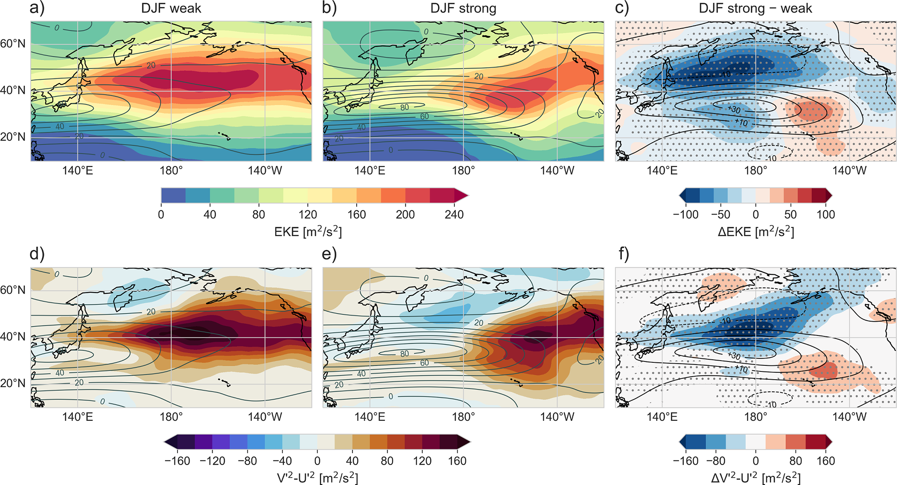
图 9 (a, b) 北太平洋 300 hPa EKE（填色）与 250 hPa 上 10 d 低通滤波纬向风（U，灰色等值线，间隔 10 m s^{−1}）。(d, e) 涡动取向度量 v^{′}^{2}-u^{′}^{2}（填色）与 250 hPa 上 10 d 低通滤波纬向风（U，灰色等值线）。(a) 与 (d) 为弱急流合成，(b) 与 (e) 为强急流合成。(c) 与 (f) 分别给出 (a) 与 (b)、(d) 与 (e) 之差（填色），打点表示分布在 1% 显著性水平上不同的格点。
Figure 9 (a, b) EKE at 300 hPa (shading) and 10 d low-pass filtered zonal wind at 250 hPa (U, gray contours, every 10 m s^−1) in the NP. (d, e) Eddy orientation measure, v^{′}^{2}-u^{′}^{2} (shading) and the 10 d low-pass filtered zonal wind on 250 hPa (U, gray contours). Panels (a) and (d) are for the weak jet composite and panels (b) and (e) for the strong jet composite. Panels (c) and (f) show the differences between panels (a) and (b), and (d) and (e), respectively in shading and the grid points where the distributions differ on a 1 % significance level in stippling.
图 9a, b 给出北太平洋弱急流与强急流三分位的合成平均 U 与 EKE。在两个合成中，EKE 最大值都位于东北太平洋，大约在 140–180° W、30–60° N，因而处于急流最大值的下游并略偏北。图 9c 给出图 9a 与图 9b 之间 EKE 与 U 的差。为识别两急流三分位之间 EKE 显著不同的格点，我们生成 2×1000 个有放回随机样本，每个样本的时次数与三分位相同，并计算其平均的成对差值。绝对值超过该再抽样分布第 99 百分位的格点打点标出。相对于弱急流三分位，强急流三分位在北太平洋大部存在显著的 EKE 减小，最显著的减小约为三分之一，出现在西北太平洋、急流最大值附近及其略西北（140–180° E, 30–60° N）。如图 9c 所示，该区域位于导致急流向东伸展的急流速度最大增幅位置的北侧。这些区域落在前述分析所用的 EKE 与 U 平均域内，也是这两个变量反向变率主要发生的地方。北大西洋观测到性质相似的减小（见图 S2）。
Figure 9a,b displays the composite mean U and EKE for the weak and strong jet terciles in the NP. In both composites, the EKE maximum is located in the eastern NP, approximately between 140–180° W and 30–60° N, and therefore downstream and slightly north of the jet maximum. Figure 9c shows the differences in EKE and U between Fig. 9a and b. To identify grid points where EKE differs significantly between the two jet terciles, we generate 2 × 1000 random samples with replacement, each containing the same number of time steps as the terciles, and compute paired differences of their averages. Grid points are stippled where the absolute difference exceeds the 99th percentile of this resampled distribution. A marked and statistically significant reduction in EKE is evident in the strong jet tercile relative to the weak jet tercile across much of the NP, with the most substantial decrease by approximately one third in the western NP, near and slightly north-west of the jet maximum (140–180° E, 30–60° N). As visible in Fig. 9c this is to the north of the location of maximum jet speed increase that leads to an eastward jet extension. These regions lie within the EKE and U averaging domains used in the preceding analyses and are where the inversely related variations of the two variables primarily take place. A qualitatively similar reduction is observed in the NA (see Fig. S2).
图 9d, e 在给出 U 的同时，给出弱急流与强急流状态下的度量 v^{′}^{2}-u^{′}^{2}。图 9f 给出差值，统计显著性用与图 9c 相同的再抽样程序评估。在一定假定下（Hoskins et al., 1983），v^{′}^{2}-u^{′}^{2} 近似正比于 l^{2}-k^{2}，其中 l 与 k 分别为经向与纬向波数，因而它是涡动各向异性的度量。负值描述纬向拉长的涡动，正值描述经向拉长的涡动。合成表明，总体而言，在图 9a, b 中 EKE 偏高的区域，涡动呈经向拉长。弱急流与强急流合成之间最明显且统计显著的差异出现在西北太平洋、沿急流最大值北侧，也就是 EKE 减小最突出的区域。在该区域，弱急流时涡动平均呈经向拉长，而强急流时则略呈纬向拉长。Nakamura and Sampe (2002) 也曾发现这类涡动各向异性变化，它已知会作为切变更强、更窄急流的结果而出现。事实上，涡动各向异性变化发生在强急流时次水平切变似乎明显增强的区域。这印证了经向急流结构对涡动特征的影响。
Figure 9d, e shows the measure v^{′}^{2}-u^{′}^{2} for the weak and strong jet states in addition to U. Figure 9f shows the difference, with statistical significance assessed using the same resampling procedure as described for Fig. 9c. Under certain assumptions (Hoskins et al., 1983) v^{′}^{2}-u^{′}^{2} is approximately proportional to l^{2}-k^{2}, where l and k are the meridional and zonal wavenumbers, making it a measure of eddy anisotropy. Negative values describe zonally elongated eddies, while positive values describe meridionally elongated eddies. The composites demonstrate that overall the eddies are meridionally elongated in the regions where EKE is high in Fig. 9a, b. The most visible and statistically significant difference between the weak and the strong jet composites is found in the western NP along the northern flank of the jet maximum, which is the region where the EKE decrease is most prominent. In this region the eddies are meridionally elongated on average with weak jets, but, in contrast, slightly zonally elongated with strong jets. Such changes in the eddy anisotropy were also found by Nakamura and Sampe (2002) and are known to occur as a consequence of a more sheared and narrow jet. In fact the changes in eddy anisotropy occur in a region where the horizontal shear appears to be strongly enhanced for the strong jet time steps. This corroborates the influence of the meridional jet structure on eddy characteristics.
鉴于 EKE 被广泛用作气旋活动的代理，我们现在也把 EKE 随急流强度的月内抑制与气旋特征联系起来。气旋可能通过其频率下降，对 DJF 期间 EKE 随急流增强而减小作出贡献。为检验这一点，我们比较在北太平洋与北大西洋区域内、分别于弱急流与强急流三分位时次加深的气旋。最大加深时次定义为以该时次为中心的 12 小时最低海平面气压（SLP）下降最大的时次。气旋经历最大加深的位置分布表明，最大加深优先发生在西部洋盆的急流北侧，并且急流越强，气旋发展越倾向于靠近气候态急流核区。两洋盆的气旋数目都不随急流增强而减少（反而增加）（见图 S6）。因此，气旋数减少无法解释强急流条件下观测到的 EKE 减小，这确认了 Schemm and Schneider (2018) 的发现。相反，若仅凭气旋数目，人们或许预期 EKE 增大，因为气旋多往往增加高 EKE 日数。因此，地面气旋在塑造平均 EKE 中的作用需要进一步研究。为此，分别对在弱急流与强急流形势下于北太平洋与北大西洋区域内加深的气旋计算气旋中心合成。
Given that EKE is widely employed as a proxy for cyclone activity, we now also establish a connection between the sub-monthly suppression of EKE with jet strength and cyclone characteristics. One way in which cyclones might contribute to the reduction of EKE with jet strength in DJF could be through a reduction of their frequency. To test this, we compare cyclones in DJF that intensify in the NP and NA regions at time steps that belong to the weak and strong jet terciles, respectively. The time of maximal intensification is defined as the time step when the centered 12-hourly decrease in minimum sea level pressure (SLP), is largest. The distribution of locations at which cyclones experience maximal intensification reveals that maximal intensification preferentially occurs on the northern jet flank in the western basins and that the cyclone development tends to occur closer to the climatological jet core region for stronger jets. The cyclone numbers do not decrease in either basin (but rather increase) with jet strength (see Fig. S6). Thus, a reduction in cyclone number cannot account for the observed decrease in EKE under strong jet conditions, confirming the findings from Schemm and Schneider (2018). On the contrary, based solely on the number of cyclones, one might expect an increase in EKE because a large number of cyclones tends to increase the number of days with high EKE. Therefore, the role of surface cyclones in shaping the averaged EKE requires further investigation. To this end, cyclone-centered composites are computed separately for cyclones that intensify in the NP and NA regions during weak and strong jet situations.
图 10 所示北太平洋气旋中心合成，对应于图 S6 两幅图中、位于图 1 红框内、处于其最大加深时次的气旋。弱急流合成共含 578 个气旋，强急流合成含 628 个气旋。图 10 给出高层与地面场。合成平均位涡（PV）距平（图 10c, d 所示），即相对全部 DJF 气旋平均 PV 的偏差，其显著性用自助法计算，涉及 1000 个等容量样本（弱急流类别样本量为 578，强急流类别为 628）的 DJF 气旋中心场。白点表示在 1% 水平上显著的负 PV 距平格点，黑点表示同一显著性水平上的正 PV 距平格点。
The cyclone-centered composites in the NP shown in Fig. 10 correspond to the cyclones shown in the two panels of Fig. S6 within the red box in Fig. 1 at the time of their maximal intensification. The weak jet composite contains a total of 578 cyclones, while the strong jet composite includes 628 cyclones. Figure 10 presents upper- and surface levels fields. The significance of the composite-mean potential vorticity (PV) anomaly (shown in Fig. 10c, d), i.e., of the deviation from the mean PV of all DJF cyclones is calculated using a bootstrapping method, involving 1000 equally sized samples (with a sample size of 578 for the weak and 628 for the strong jet category) of cyclone-centered fields from DJF. White stippling indicates grid points with a negative PV anomaly that is significant at the 1 % level, while black stippling represents grid points with a positive PV anomaly at the same significance level.
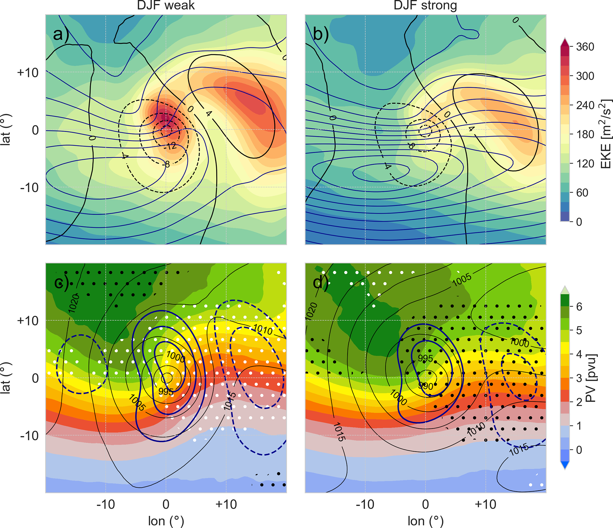
图 10 北太平洋区域内气旋在其 12 小时最大加深时次的气旋中心合成。给出最大加深发生在弱 U 三分位 (a, c) 与强 U 三分位 (b, d) 时次的气旋。(a) 与 (b) 填色为 300 hPa EKE，黑色等值线为高通滤波海平面气压（间隔 4 hPa），蓝色等值线为 250 hPa 总动能（间隔 200 m^{2} s^{−2}）。最内侧总动能等值线在 (a) 为 1400 m^{2} s^{−2}，在 (b) 为 2200 m^{2} s^{−2}。(c) 与 (d) 填色为 320 K 位涡，黑色等值线为海平面气压（间隔 5 hPa），粗蓝等值线为 300 hPa 高通滤波经向风（间隔 5 m s^{−1}）。相对全部 DJF 气旋 PV 分布、在 1% 水平上显著的正（负）PV 距平分别以黑（白）点表示。
Figure 10 Cyclone-centered composites of cyclones at their time step of maximal 12 h intensification in the NP domain. Shown are cyclones with maximal intensification during time steps belonging to the weak (a, c) and strong U (b, d) terciles. Panels (a) and (b) show the 300 hPa EKE in shading, the high-pass filtered SLP in black contours (every 4 hPa) and the total kinetic energy at 250 hPa in blue contours (every 200 m^2 s^−2). The innermost total kinetic energy contour is 1400 m^2 s^−2 in panel (a) and 2200 m^2 s^−2 in panel (b). Panels (c) and (d) show PV on 320 K in shading, SLP in black contours (every 5 hPa), and the high-pass filtered meridional wind at 300 hPa in thick blue contours (every 5 m s^−1). The significance of a positive (negative) PV anomaly with respect to the PV distribution of all DJF cyclones on a 1 % level is shown by black (white) stippling.
海平面气压型（图 10c, d）在弱急流与强急流个例中非常相似，强急流个例平均最低海平面气压略低。不过这其实是背景海平面气压更低的结果。事实上，高通滤波海平面气压在弱急流个例中具有更低的最小值。因此相对背景的海平面气压距平在强急流个例中略弱（强急流为 −12 hPa，弱急流为 −16 hPa）。强急流个例中每个气旋的高层 EKE 明显减小。因此，观测到的 EKE 随急流增强而减小，不能归因于气旋数目减少，而应归因于气旋高层 EKE 信号振幅的减小（与 Schemm and Schneider (2018) 关于隆冬抑制期间每个气旋平均 EKE 下降的发现一致），并伴随海平面气压距平减弱。总动能（KE）最大值相对气旋中心的位置表明，加深气旋优先位于急流出口左侧附近。在强急流个例中，KE 按定义更高，其取向以纬向为主，提示急流结构相对平直。相反，弱急流个例呈现更波动的 KE 型，表明上游槽与下游脊更显著。这一槽脊结构进一步由高层 PV 场印证，后者突出弱急流与强急流合成之间波动性的差异。统计显著性打点确认：相对 DJF 气候态，脊在弱急流合成中更显著（以异常低 PV 为特征），而在强急流个例中较不显著（以异常高 PV 为特征），显著性水平为 1%。
The SLP pattern (shown in Fig. 10c, d) is very similar for both the weak and strong jet cases, with the strong jet cases exhibiting a slightly lower minimum SLP on average. However, this turns out to be a consequence of the lower background SLP. In fact, the high-pass filtered SLP exhibits a lower minimum value in the weak jet cases. The SLP anomaly with respect to the background is therefore slightly weaker in the strong jet cases (-12 hPa in the strong compared to -16 hPa in the weak jet cases). The upper-level EKE per cyclone is strongly reduced for the strong jet cases. Thus, the observed decrease in EKE with jet strength cannot be attributed to a reduction in the number of the cyclones, but rather to a reduction of the amplitude of the upper-level EKE signature of the cyclones (in line with findings from Schemm and Schneider (2018) that the mean EKE per cyclone decreases during the midwinter suppression), which goes along with a weakening of the SLP anomaly. The position of the KE (total kinetic energy) maximum with respect to the cyclone center indicates that intensifying cyclones are preferentially located near the left jet exit region. In the strong jet cases, KE is higher by definition, and its orientation is predominantly zonal, suggesting a relatively straight jet structure. In contrast, the weak jet cases exhibit a more wavy KE pattern, indicative of a more pronounced upstream trough and a downstream ridge. This trough-ridge structure is further corroborated by the upper-level PV fields, which highlight the difference in waviness between the weak and strong jet composites. The statistical significance stippling confirms that, relative to the DJF climatology, the ridge is more pronounced in the weak jet composite (characterized by anomalously low PV), whereas it is less pronounced in the strong jet case (characterized by anomalously high PV) at a 1 % significance level.
槽脊结构的振幅与图 10 所示 EKE 信号及其对急流强度的依赖相一致。EKE 呈现两个不同最大值：一个靠近气旋中心，另一个在下游。这些最大值对应于伴随地面气旋的高层下游脊的两侧。这些区域以强瞬变经向气流为特征，从而产生显著的经向风扰动（v^{′}）。值得注意的是，当急流更偏纬向时，强急流个例中靠近气旋中心的正 v^{′} 值（以及脊下游侧的负 v^{′} 值）减小。v^{′} 随急流增强而减小，以及 KE 与 PV 场中更纬向的高层结构，与图 9c, d 关于高层涡动形态受急流强度与经向结构影响的观测一致。v^{′}^{2} 的减小伴随涡动经向范围的缩小。由以往理想化研究获得的机制认识（例如 Harnik and Chang, 2004），结合 DJF 强急流三分位相联系的观测涡动特征表明，急流宽度减小在使涡动变形并在经向上被约束方面起作用，从而在冬季内部调节其斜压增长率。这并不表现为气旋数目减少，而表现为相伴高层槽脊振幅以及地面气压距平的减小。
The amplitude of the trough-ridge structure agrees with the EKE signature and its dependence on jet strength, as shown in Fig. 10. The EKE exhibits two distinct maxima: one located near the cyclone center and another downstream. These maxima correspond to the flanks of the downstream ridge that accompanies the surface cyclones at upper levels. These regions are characterized by strong transient meridional flow, resulting in a pronounced meridional wind perturbation (v^{′}). Notably, the positive v^{′} values close to the cyclone center (but also the negative v^{′} values on the downstream flank of the ridge) are reduced for the strong jet cases, when the jet is more zonal. This reduction in v^{′} values with jet strength and the more zonal upper-level structure observed in the KE and PV fields agrees with the observation from Fig. 9c,d that the shape of the upper-level eddies is affected by the jet strength and meridional structure. The reduction in v^{′}^{2} is accompanied by a decrease in the meridional extent of the eddies. The mechanistic understanding gained from previous idealized studies (e.g. (Harnik and Chang, 2004)), combined with the observed eddy characteristics associated with the strong jet terciles in DJF, suggest that the reduced jet width plays a role in deforming and meridionally confining eddies, thereby modulating their baroclinic growth rates within the winter season. This is not reflected in a reduction in cyclone numbers but rather in a reduction in the amplitude of the associated upper-level troughs and ridges, as well as the surface pressure anomaly.
总结与结论
Summary and conclusions
本研究通过分析背景急流强度（U）与涡动动能（EKE）的关系，考察北太平洋与北大西洋高层急流与风暴路径的相互作用。分析使用 1980–2023 年 6 小时 ERA5 再分析资料。鉴于 EKE 变率很大，以往研究常通过对较长时间（例如 30 d）平均 U 与 EKE 来评估该关系。然而，该方法会在北太平洋与北大西洋之间引入 U–EKE 关系的表观差异，而这些差异来自两洋盆急流变率时间尺度的不同。尤其在北大西洋，急流的强月内变率使得用月尺度平均比较北太平洋与北大西洋的 U–EKE 关系变得复杂。为此，我们引入一种按时次相近 U 值分组的替代平均方法，从而可以不依赖于变率时间尺度来评估 U–EKE 关系。为更好理解所得关系，我们分别研究月内效应与季节效应。我们还通过应用本研究前半部分引入的替代平均方法与时间尺度分离，考察急流宽度在两个时间尺度上对 U–EKE 关系的作用。为评估 DJF 期间纬向气流变化在气旋与涡动特征上的印记，我们对低急流强度与高急流强度条件对应的时次作合成。
This study investigates the interaction between the upper-level jet and storm tracks in the NP and NA by analyzing the relationship between background jet strength (U) and eddy kinetic energy (EKE). The analysis is conducted using 6-hourly ERA5 reanalysis data for the period 1980–2023. Given the substantial variability of EKE, previous studies have often assessed this relationship by averaging U and EKE over extended periods (e.g., 30 d). However, this approach introduces apparent differences in the U-EKE relationship between the NP and NA, which result from the differing timescales of the jet variability in the two basins. In particular, in the NA, the strong sub-monthly variability of the jet complicates the comparison between the U-EKE relationships in the NP and NA when using monthly-scale averages. To address this, we introduce an alternative averaging method in which time steps are grouped by similar U values, enabling an evaluation of the U–EKE relationship that is independent of the timescale of variability. In order to better understand the resulting relationship, we study the sub-monthly and seasonal effects separately. We additionally examine the role of jet width for the U-EKE relationship on both timescales by applying the alternative averaging approach and timescale separation introduced in the first part of the study. To assess the imprint of changes in the zonal flow on cyclone and eddy characteristics during DJF, we composite time steps corresponding to low and high jet strength conditions.
我们的结果表明，U–EKE 关系在北太平洋与北大西洋之间高度一致。在两个洋盆中，U–EKE 关系在季节尺度与月内尺度上不同：在季节尺度上，EKE 随急流增强而增大，与斜压不稳定理论一致；而在月内尺度上，尤其在冬季，EKE 随急流增强而减小（见图 5），这与高斜压性、低 EKE 与随后斜压转换建立 EKE 并降低斜压性之间振荡的图景一致。先前报告的两洋盆隆冬抑制差异（Nakamura, 1992，见其图 10）在很大程度上可归因于北太平洋与北大西洋急流变率时间尺度的不同及其对月尺度统计的影响。这些时间尺度差异植根于底层急流维持机制（Holton, 1992; Pena-Ortiz et al., 2013; Lee and Kim, 2003; Ambaum and Novak, 2014; Hallam et al., 2022）。在北太平洋，急流主要由 Hadley 环流驱动，后者在隆冬相对肩月最强。此外，急流还受显著行星波槽约束（Nakamura et al., 2002; Nakamura and Sampe, 2002）。因此急流在隆冬整个月份内持续偏强，斜压转换减弱导致 EKE 偏低。相反，涡动驱动的北大西洋急流在月内尺度上与涡动同步、强度变化更大，因而 U 与 EKE 的反相关在月平均中检测不到。Afargan and Kaspi (2017) 表明，在急流特别强并向赤道位移的年份，北大西洋也存在隆冬抑制。这些年份很可能北大西洋急流类似于北太平洋急流，月内变率较小。我们的发现表明，EKE 与急流强度的反相关在北大西洋始终存在，但通常只在月内尺度上显现。值得注意的是，由于 EKE 固有变率很大，负的月内相关幅度相对较小；尽管如此，这些相关仍高度统计显著。
Our findings demonstrate that the U-EKE relationship is remarkably consistent across the NP and NA. In both basins the U-EKE relationship differs on seasonal and sub-monthly timescales: On seasonal timescales, EKE increases with jet strength, consistent with baroclinic instability theory, whereas on sub-monthly timescales, especially in winter, EKE decreases with jet strength (see Fig. 5) consistent with the idea of an oscillation between high baroclinicity and low EKE followed by baroclinic conversion building up EKE and decreasing baroclinicity. The previously reported differences in midwinter suppression between the two basins (Nakamura, 1992, see their Fig. 10) can largely be attributed to differing timescales of jet variability between the NP and NA and their influence on monthly-scale statistics. These differences in the time scales are rooted in the underlying jet maintenance mechanisms (Holton, 1992; Pena-Ortiz et al., 2013; Lee and Kim, 2003; Ambaum and Novak, 2014; Hallam et al., 2022). In the NP, the jet is primarily driven by the Hadley circulation, which is strongest in midwinter, compared to the shoulder months. In addition, the jet is constrained by a prominent planetary-wave trough (Nakamura et al., 2002; Nakamura and Sampe, 2002). The jet thus stays persistently strong throughout entire months in midwinter, with reduced baroclinic conversion leading to low EKE. Conversely, the eddy-driven NA jet varies more in its strength on sub-monthly time scales in tandem with the eddies, such that the inverse relationship between U and EKE is not detectable in monthly averages. Afargan and Kaspi (2017) showed that a midwinter suppression is present in the NA in years when the jet is particularly strong and shifted equatorward. These are likely years when the NA jet resembles the NP jet, exhibiting less sub-monthly variability. Our findings suggest that the inverse relationship of EKE with jet strength is always present in the NA, but generally only evident on sub-monthly timescales. It is worth noting that the negative sub-monthly correlations are relatively small in magnitude due to the inherently high variability of EKE; nevertheless, these correlations remain highly statistically significant.
无法仅由急流强度解释的月际 EKE 差异，以及 U 与 EKE 的负月内相关，都可以通过额外考虑急流宽度的影响而得到更好理解。急流宽度及相伴的水平切变长期以来被视为调节斜压涡动经向范围与经向波数、从而影响其增长率的因子（Hoskins and Karoly, 1981; Branstator, 1983; Ioannou and Lindzen, 1986; James, 1987; Nakamura, 1993; Harnik and Chang, 2004; Deng and Mak, 2005）。与此认识一致，我们的结果表明，DJF 期间 EKE 随急流增强而减小，伴随涡动经向尺度缩小、变得更纬向拉长（见图 9）。该行为很可能与急流变窄相联系，因为 DJF 观测到急流强度与急流宽度之间强负相关（见图 7）。与 U–EKE 关系类似，急流强度与宽度的关系也有显著季节依赖：给定急流强度下，冬季急流宽于夏季。但在月内尺度上，急流宽度往往随急流增强而减小。我们提出，季节变化的辐射强迫约束了急流强度与宽度的组合。从夏季到冬季的季节性展宽有助于解释给定 U 下冬季观测到更高的 EKE。相反，在月内尺度上，急流随强度增大而变窄，与低 EKE 相联系。需要强调的是，尤其在月内尺度上，10 d 低通滤波急流不能被视为涡动在其中演变的固定背景态。更宽的急流可能有利于经向范围更大的涡动发展，而这些涡动反过来又会改变急流结构（Lorenz and Hartmann, 2001）。
Both EKE differences between months that cannot be explained by jet strength alone, and the negative sub-monthly correlation between U and EKE, can be even better understood by additionally considering the effect of jet width. Jet width and the associated horizontal shear have long been recognized as factors modulating the meridional extent and meridional wavenumber of baroclinic eddies, thereby affecting their growth rates (Hoskins and Karoly, 1981; Branstator, 1983; Ioannou and Lindzen, 1986; James, 1987; Nakamura, 1993; Harnik and Chang, 2004; Deng and Mak, 2005). Consistent with this understanding, our results indicate that the decrease in EKE with increasing jet strength during DJF is accompanied by a reduction in the meridional scale of the eddies, which become more zonally elongated (see Fig. 9). This behavior is likely linked to the narrowing of the jet, given the strong negative correlation between jet strength and jet width observed in DJF (see Fig. 7). Similar to the U-EKE relationship, the relationship between jet strength and width exhibits a pronounced seasonal dependence: for a given jet strength, the jet is wider in winter than in summer. On sub-monthly timescales, however, jet width tends to decrease with increasing jet strength. We propose that the seasonally varying radiative forcing constrains the combination of jet strength and width. The seasonal broadening of the jet from summer to winter helps explain the higher EKE observed at a given U during winter. Conversely, on sub-monthly timescales, the narrowing of the jet with increasing jet strength is associated with low EKE. It is important to emphasize that, particularly on sub-monthly timescales, the 10 d low-pass filtered jet cannot be regarded as a fixed background state within which eddies evolve. While a broader jet may facilitate the development of eddies with a larger meridional extent, these eddies in turn, modify the jet structure (Lorenz and Hartmann, 2001).
我们的发现与 Harnik and Chang (2004) 先前工作一致，后者在理想化设置中强调急流宽度对调节 EKE 的作用。不过，Harnik and Chang (2004)、Chang (2001) 与 Novak et al. (2020) 主要在年际尺度上强调这一影响，并质疑其与季节尺度隆冬抑制的相关性。尤其是，Novak et al. (2020) 基于针对月时间尺度的理想化模拟结果，认为急流切变变化与隆冬涡动活动受抑开始之间存在时间滞后。Harnik and Chang (2004) 认为，隆冬与肩月之间的急流宽度差异相对年际变化较小。我们的分析揭示出 DJF 急流结构所对应的涡动与气旋特征存在清晰差异，表明急流宽度在准季节尺度上也可能有影响。不过，由于我们的合成汇总了多年全部 DJF 时次，所诊断的涡动特征同时反映准季节变率与年际变率。此外，我们分析中的背景急流不应被理解为理想化槽道模式实验中所用的基本态（例如 Harnik and Chang, 2004）。尽管如此，我们的发现强调急流宽度与 EKE 在多个时间尺度上的紧密联系。急流强度与急流宽度的联合效应及其与差分加热的联系，为未来气候条件下辐射强迫变化调节风暴路径活动提供了一条潜在途径。
Our findings are consistent with previous work by Harnik and Chang (2004), which highlighted the role of jet width in modulating EKE in an idealized setup. However, Harnik and Chang (2004), Chang (2001), and Novak et al. (2020) emphasized this influence primarily on inter-annual timescales, questioning its relevance for the midwinter suppression on seasonal scales. In particular, Novak et al. (2020) argued that a time lag exists between changes in jet shear and the onset of the suppression of eddy activity in midwinter, based on results from idealized simulations for monthly timescales. Harnik and Chang (2004) argued that the differences in jet width between midwinter and the shoulder months is relatively small compared to inter-annual variations. Our analysis reveals clear differences in eddy and cyclone characteristics depending on the jet structure in DJF, indicating a potential influence of the jet width on sub-seasonal timescales. However, since our composites aggregate all DJF time steps across multiple years, the diagnosed eddy characteristics reflect both sub-seasonal and interannual variability. Moreover, the background jet in our analysis should not be interpreted as a basic state in the sense used in idealized channel model experiments (e.g., Harnik and Chang, 2004). Nonetheless, our findings underline the tight link between jet width and EKE on multiple timescales. The importance of the combined effect of jet strength and jet width and their link to differential heating offer a potential pathway through which changes in radiative forcing under future climate conditions could modulate storm track activity.
与急流宽度变化相联系的涡动取向变化，很可能通过改变涡动热通量的主导方向，影响斜压转换与涡动增长效率。这与 Schemm and Rivière (2019) 以及 Okajima et al. (2021) 在受影响区域观测到的这些量的隆冬减小相一致。不过，经向涡动结构变化对该背景下涡动效率的精确影响仍需进一步研究。除改变斜压增长率外，水平切变增大并伴随涡动变形增强，也可能促成 EKE 向平均流动能的更强正压转换。该机制构成 EKE 的额外汇，与 Deng and Mak (2005) 的发现一致，尽管它在风暴路径入口区很可能是次要的（Chang, 2001）。
Variations in eddy orientation associated with changes in jet width likely influence baroclinic conversion and eddy growth efficiency by altering the dominant direction of eddy heat fluxes. This aligns with the midwinter reduction in these quantities observed in the affected region by Schemm and Rivière (2019) and Okajima et al. (2021). However, the exact effect of changes in the meridional eddy structure on the eddy efficiency in this context requires further research. Beyond altering baroclinic growth rates, increased horizontal shear accompanied by enhanced eddy deformation may also contribute to stronger barotropic conversion of EKE to mean flow kinetic energy. This mechanism constitutes an additional sink of EKE, consistent with the findings of Deng and Mak (2005), though it is likely of secondary importance in the storm track entrance region (Chang, 2001).
由急流强度与水平廓线变化所诱导的涡动特征变化，反映在单个气旋的属性上（见图 10）。对 DJF 气旋统计的分析表明，更强、更窄急流所对应的 EKE 抑制并不伴随气旋频率下降。相反，每个气旋的对流层上层 EKE 显著减小，与 Schemm and Schneider (2018) 的发现一致，同时相伴海平面气压距平略有减弱。就位涡而言，高层 EKE 的减小与相伴 PV 距平振幅减小相联系，反映瞬变槽脊不那么显著。急流波动性的差异提示：当急流偏弱时，非绝热加热的作用更重要。这些个例中增强的经向气流有利于暖输送带内的上升，而相伴的非绝热流出已知会影响高层急流的波动性（Atlas, 1987; Hoskins and Berrisford, 1988; Davis et al., 1993; Wernli and Gray, 2024; Vishnupriya et al., 2025）。事实上，非绝热过程对涡动活动作用的变化先前已在隆冬抑制背景下被指出（Chang, 2001）。因此，量化不同急流强度下的非绝热贡献是未来工作的一个有前景方向，尤其考虑到暖湿过程在变暖气候中预期将增强。
The variations in eddy characteristics induced by changes in the jet strength and horizontal profile are reflected in the properties of individual cyclones (see Fig. 10). An analysis of cyclone statistics during DJF indicates that the observed suppression in EKE for a stronger and more narrow jet is not associated with a decrease in cyclone frequency. Rather, the upper-tropospheric EKE per cyclone is substantially reduced, consistent with the findings of Schemm and Schneider (2018), alongside a slight weakening of the associated SLP anomalies. In terms of PV, the reduction in upper-level EKE is linked to a decrease in the amplitude of associated PV anomalies, reflecting less pronounced transient troughs and ridges. The differences in jet waviness suggest a more important role of diabatic heating when the jet is weak. Enhanced meridional flow for these cases favors ascent within warm conveyor belts, and the associated diabatic outflow is known to influence upper-level jet waviness (Atlas, 1987; Hoskins and Berrisford, 1988; Davis et al., 1993; Wernli and Gray, 2024; Vishnupriya et al., 2025). Indeed, changes in the role of diabatic processes for eddy activity have previously been noted in the context of the midwinter suppression (Chang, 2001). Quantifying diabatic contributions for different jet strengths therefore presents a promising direction for future work, particularly given the expected increase in the role of moist processes in a warming climate.
附录 A：将方差分解为月际方差与月内方差
Separation of variance into between-month and within-month variance
令 X 与 Y 表示 43 年期间 6 小时分辨率的大气变量。X 的方差按式 (A1) 定义，其中指标 i 遍历所有年份所有月份的全部时次，X‾ 表示 X 对全部时次的平均。为便于分解方差，我们引入新指标 t_{m}，它遍历月份 m 在所有年份中的全部时次。采用该记号，式 (A1) 中的求和可改写为式 (A2)。将式 (A2) 展开得到式 (A3)，其中 X_{m}‾ 表示月份 m 在所有年份中全部时次的平均。进一步展开式 (A3) 得到式 (A4)，其中第二个交叉项为零，从而简化为式 (A5)，其中 n_{m} 表示月份 m 在所有年份中的总时次数。
Let X and Y denote atmospheric variables available at 6-hourly resolution over a 43-year period. The variance of X is defined as in Eq. (A1), where the index i iterates over all time steps of every month across all years, and X[‾] denotes the mean of X over all time steps. To facilitate a decomposition of the variance, we introduce a new index t_{m}, which iterates over all time steps of the month m across all years. Using this notation, the sum in Eq. (A1) can be rewritten as shown in Eq. (A2). The expression in Eq. (A2) can be expanded to obtain Eq. (A3), where X_{m}[‾] represents the mean of X over all time steps (across all years) within month m. Further expansion of Eq. (A3) yields Eq. (A4), where the second cross-term vanishes, leading to the simplified form in Eq. (A5), where n_{m} denotes the total number of time steps across all years within the month m.
式 (A5) 中第一项表示各月内部个别时次相对其各自月平均的变率对总方差的贡献（称为月内方差）。第二项捕捉月平均相对总平均的变率贡献（称为月际方差），并以各月时次数加权。
The first term in Eq. (A5) represents the contribution to the total variance from the variability of individual time steps within each month around their respective monthly means (referred to as the within-month variance). The second term captures the contribution from the variability of the monthly means relative to the overall mean (referred to as the between-month variance), weighted by the number of time steps in each month.
对 X 与 Y 的协方差可作类似分解，从而分离为月内与月际协方差项，见式 (A6)–(A10)。
An analogous decomposition can be performed for the covariance between X and Y, resulting in a separation into within-month and between-month covariance terms, as shown in Eqs. (A6)–(A10).
(A1) Var(X)=(1)/(N-1)∑_i^N (X_i-X‾)^{2} (A2) =(1)/(N-1)∑_m ∑_{t_m} (X_{m,t_m}-X‾)^{2} (A3) =(1)/(N-1)∑_m ∑_{t_m} (X_{m,t_m}-X_m‾+X_m‾-X‾)^{2} (A4) =(1)/(N-1)(∑_m ∑_{t_m} (X_{m,t_m}-X_m‾)^{2}+2∑_m (X_m‾-X‾)∑_{t_m} (X_{m,t_m}-X_m‾)+∑_m ∑_{t_m} (X_m‾-X‾)^{2}) (A5) =(1)/(N-1)∑_m ∑_{t_m} (X_{m,t_m}-X_m‾)^{2} ︸(i) +(1)/(N-1)∑_m n_m (X_m‾-X‾)^{2} ︸(ii)
(A1) Var(X)=(1)/(N-1)∑_i^N (X_i-X‾)^{2} (A2) =(1)/(N-1)∑_m ∑_{t_m} (X_{m,t_m}-X‾)^{2} (A3) =(1)/(N-1)∑_m ∑_{t_m} (X_{m,t_m}-X_m‾+X_m‾-X‾)^{2} (A4) =(1)/(N-1)(∑_m ∑_{t_m} (X_{m,t_m}-X_m‾)^{2}+2∑_m (X_m‾-X‾)∑_{t_m} (X_{m,t_m}-X_m‾)+∑_m ∑_{t_m} (X_m‾-X‾)^{2}) (A5) =(1)/(N-1)∑_m ∑_{t_m} (X_{m,t_m}-X_m‾)^{2} ︸(i) +(1)/(N-1)∑_m n_m (X_m‾-X‾)^{2} ︸(ii)
(A6) Cov(X,Y)=(1)/(N-1)∑_i^N (X_i-X‾)(Y_i-Y‾) (A7) =(1)/(N-1)∑_m ∑_{t_m} (X_{m,t_m}-X‾)(Y_{m,t_m}-Y‾) (A8) =(1)/(N-1)∑_m ∑_{t_m} (X_{m,t_m}-X_m‾+X_m‾-X‾)(Y_{m,t_m}-Y_m‾+Y_m‾-Y‾) (A9) =(1)/(N-1)(∑_m ∑_{t_m} (X_{m,t_m}-X_m‾)(Y_{m,t_m}-Y_m‾)+∑_m (Y_m‾-Y‾)∑_{t_m} (X_{m,t_m}-X_m‾)+∑_m (X_m‾-X‾)∑_{t_m} (Y_{m,t_m}-Y_m‾)+∑_m ∑_{t_m} (X_m‾-X‾)(Y_m‾-Y‾)) (A10) =(1)/(N-1)∑_m ∑_{t_m} (X_{m,t_m}-X_m‾)(Y_{m,t_m}-Y_m‾) ︸(iii) +(1)/(N-1)∑_m n_m (X_m‾-X‾)(Y_m‾-Y‾) ︸(iv)
(A6) Cov(X,Y)=(1)/(N-1)∑_i^N (X_i-X‾)(Y_i-Y‾) (A7) =(1)/(N-1)∑_m ∑_{t_m} (X_{m,t_m}-X‾)(Y_{m,t_m}-Y‾) (A8) =(1)/(N-1)∑_m ∑_{t_m} (X_{m,t_m}-X_m‾+X_m‾-X‾)(Y_{m,t_m}-Y_m‾+Y_m‾-Y‾) (A9) =(1)/(N-1)(∑_m ∑_{t_m} (X_{m,t_m}-X_m‾)(Y_{m,t_m}-Y_m‾)+∑_m (Y_m‾-Y‾)∑_{t_m} (X_{m,t_m}-X_m‾)+∑_m (X_m‾-X‾)∑_{t_m} (Y_{m,t_m}-Y_m‾)+∑_m ∑_{t_m} (X_m‾-X‾)(Y_m‾-Y‾)) (A10) =(1)/(N-1)∑_m ∑_{t_m} (X_{m,t_m}-X_m‾)(Y_{m,t_m}-Y_m‾) ︸(iii) +(1)/(N-1)∑_m n_m (X_m‾-X‾)(Y_m‾-Y‾) ︸(iv)
附录 B：将区域内经向积分的高层纬向急流与区域边界温度差相联系
Relating the meridionally integrated upper-level zonal jet within a domain to the temperature difference at the domain boundaries
为形式化第4节的论点，即总的赤道–极地温度差对急流核强度与经向急流结构的组合构成约束，我们将热成风关系应用于低通滤波温度（T）与纬向风（U）场：(∂U)/(∂ln p)=-(R)/(f)(∂T)/(∂y)。 (B1) 垂直与经向积分得到 ∫_{y_1}^{y_2} f U(p_1,y) dy ︸(i)，(B2) = ∫_{y_1}^{y_2} f U(p_0,y) dy - R ∫_{y_1}^{y_2} ∫_{p_0}^{p_1} (1/p)(∂T/∂y) dp dy (B3) = ∫_{y_1}^{y_2} f U(p_0,y) dy - R ∫_{p_0}^{p_1} (1/p) ΔT(p) dp (B4) ≊ -R ∫_{p_0}^{p_1} (1/p) ΔT(p) dp ︸(ii)，其中 y 表示经向位置，f 为随纬度变化的科里奥利参数，R 为干空气比气体常数。式 (B4) 在假定积分低层急流远弱于高层急流的条件下近似式 (B3)。在此假定下，给定区域内以科里奥利参数加权的经向积分纬向背景急流，正比于急流下方区域边界之间、以 p^{-1} 加权的垂直累积总温度差。我们将此应用于北太平洋区域（图 1 黑框）内 6 小时纬向平均场，对 (i) 使用 20–60° N 作为积分边界（在 250 hPa 评估），对积分 (ii) 使用 900–250 hPa 作为积分边界。图 B1 给出各月积分 (i)（无斜线箱）与 (ii)（斜线箱）取值的分布。如所预期，(i) 与 (ii) 一同演变，都呈现清晰的季节循环。(i) 略高的取值很可能是忽略低层纬向急流（式 (B3) 左侧第一项）的结果。月内方差相当可观，说明各月内固定的赤道–极地温度差是高度理想化的假定，尤其当应用于 20–60° N 时。尽管如此，季节方差压过月内变率，表现为代表各月四分位距的箱相对较小。因此，可假定我们区域内 250 hPa 经向积分的 fU 在月内近似固定。这意味着若纬向急流核速度减小，急流必须变宽。f 的效应是更偏赤道的急流必须更强。冬季 (i) 高于夏季，意味着不同季节核强度相同的急流在冬季必须更宽。因此，这一定量方法确认了第4节对急流强度与急流宽度关系的定性解释。进一步的支持来自：表达式 (ii) 月平均取值的顺序（以彩色水平线给出）捕捉了图 7 中回归线从夏季到冬季向更高 U 与更大急流宽度移动的顺序。
To formalize the argument from Sect. 4 that the total equator-to-pole temperature difference sets a constraint for the combination of jet core strength and meridional jet structure, we apply the thermal wind relationship to the low-pass filtered temperature (T) and zonal wind (U) fields: (∂U)/(∂lnp)=-(R)/(f)(∂T)/(∂y). (B1) Vertical and meridional integration yields ∫[y_{1}y_{2}]fU(p_{1},y)dy[︸][(i)],B2=∫[y_{1}y_{2}]fU(p_{0},y)dy-R∫[y_{1}y_{2}]∫[p_{0}p_{1}](1)/(p)(∂T)/(∂y)dpdyB3=∫[y_{1}y_{2}]fU(p_{0},y)dy-R∫[p_{0}p_{1}](1)/(p)ΔT(p)dpB4≊-R∫[p_{0}p_{1}](1)/(p)ΔT(p)dp[︸][(ii)], where y represents the meridional position, f denotes the latitude-dependent Coriolis parameter, and R is the specific gas constant for dry air. Equation (B4) approximates Eq. (B3) under the assumption that the integrated low-level jet is much weaker than the upper-level jet. Under this assumption the meridionally integrated zonal background jet weighted by the Coriolis parameter within a given domain is proportional to the (p^{-1})-weighted vertically accumulated total temperature difference between the domain boundaries beneath the jet. We apply this to the 6-hourly zonally averaged fields within the NP domain (black box in Fig. 1), using 20–60° N as integration boundaries for (i) (evaluated at 250 hPa) and 900–250 hPa as integration boundaries for the integral (ii). Figure B1 shows the distribution of values of the integrals (i) (unhatched boxes) and (ii) (hatched boxes) for each month. As expected, (i) and (ii) evolve together, both exhibiting a distinct seasonal cycle. The slightly higher values of (i) are likely a consequence of neglecting the low-level zonal jet (first term on the left-hand side in Eq. (B3)). The sub-monthly variance is substantial, underlining that the fixed equator-to-pole temperature difference within months is a highly idealized assumption, especially if applied to the latitudes 20–60° N. Nonetheless, the seasonal variance dominates over the sub-monthly variability, as evidenced by the comparatively small extent of the boxes representing the inter-quartile range within months. As a consequence, the meridionally integrated fU at 250 hPa within our domain can be assumed to be approximately fixed within months. This implies that if the zonal jet core velocity is reduced, the jet must become broader. The effect of f is that a more equator-ward jet must be stronger. The higher values of (i) in winter compared to summer imply that a jet with the same core strength in the different seasons must be broader in winter. Thus, this quantitative approach confirms the qualitative explanation for the relationship between jet strength and jet width provided in Sect. 4. Further support is provided by the fact, that the order of the monthly mean values of (ii) (shown as horizontal coloured lines) captures the order of the shift of the regression lines in Fig. 7 toward higher U and jet widths from summer to winter.
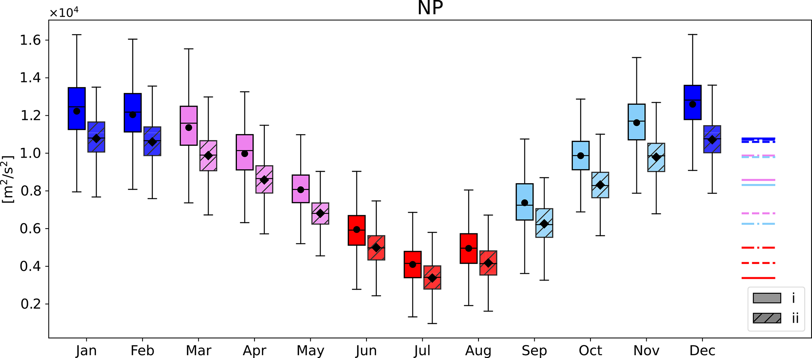
图 B1 箱线图给出式 (B2) 中表达式 (i) 与式 (B4) 中表达式 (ii) 的分布，其中 y_{1}=20° N，y_{2}=60° N，p_{0}=900 hPa，p_{1}=250 hPa。箱表示四分位距（IQR），横线为中位数，黑色标记为均值。须线延伸至 1.5 倍 IQR 内最极端的数据点。右侧彩色水平线给出表达式 (ii) 各月平均，颜色与线型同图 5。
Figure B1 Boxplot showing the distribution of expression (i) in Eq. (B2) and expression (ii) in Eq. (B4) with y_{1}=20° N, y_{2}=60° N and p_{0}=900 hPa, p_{1}=250 hPa. The boxes indicate the interquartile range (IQR), with the horizontal line depicting the median and the black marker showing the mean. Whiskers extend to the most extreme data points within 1.5 times the IQR. The horizontal coloured lines on the right show the averages of expression (ii) for the different months in same colours and linestyles as in Fig. 5.
致谢。我们感谢 Philipp Geissmann 在项目早期计算北大西洋合成，这些结果促使进一步比较北太平洋与北大西洋。作者感谢 Michael Sprenger 提供气旋路径与合成工具。我们也感谢 Gwendal Rivière 提供有助于机制理解的意见。最后，感谢匿名审稿人与 Hisashi Nakamura 在审稿过程中的建设性反馈。大语言模型被用于改进文字质量与文风。
Acknowledgements. We thank Philipp Geissmann for computing composites of the North Atlantic in the early phases of the project, which showed the interest of further comparing the North Pacific and North Atlantic. The authors are grateful to Michael Sprenger for providing the cyclone tracks and compositing tool. We also thank Gwendal Rivière for fruitful inputs that helped with the mechanistic understanding. Finally, we thank the anonymous reviewer and Hisashi Nakamura for their constructive feedback during the review process. A large language model was used for the improvement of the quality and style of writing.
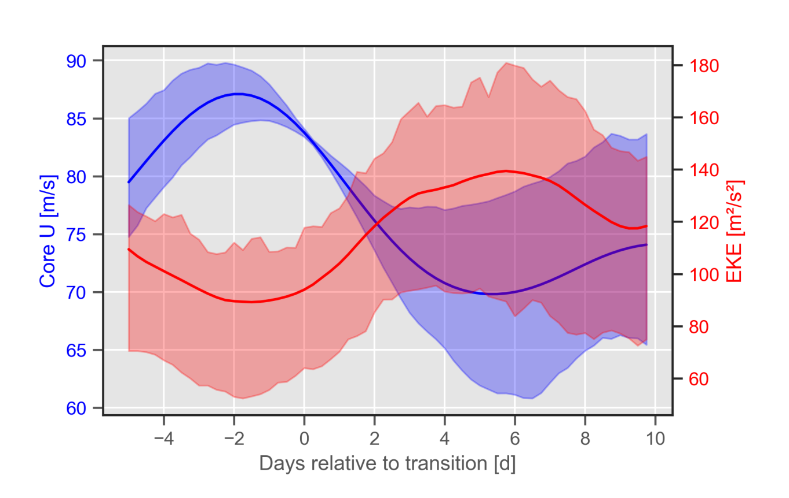
图 S1 DJF 期间北太平洋区域内，U 从高三分位过渡到中三分位之后，U 与 EKE 的 2 日滑动平均时间演变。实线为各滞后上全部事件的平均，填色为全部事件的四分位距。
Figure S1 Temporal evolution of the 2-day running mean of U and EKE in the NP domains after transitions of U from the upper to middle tercile in DJF. The solid lines represent the mean of all events at each lag, while the shading represents the inter-quartile range of all events.
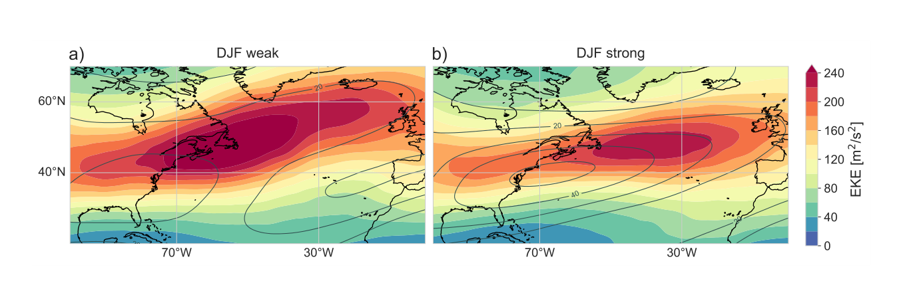
图 S2 北大西洋弱急流 (a) 与强急流 (b) 时次的 300 hPa EKE（填色）与 250 hPa 上 10 d 低通滤波纬向风（U，灰色等值线，间隔 10 m s^{−1}）。
Figure S2 EKE at 300 hPa (shading) and 10-d low-pass filtered zonal wind at 250 hPa (U, gray contours, every 10 m s−1) in the NA for weak (a) and strong (b) jet timesteps.
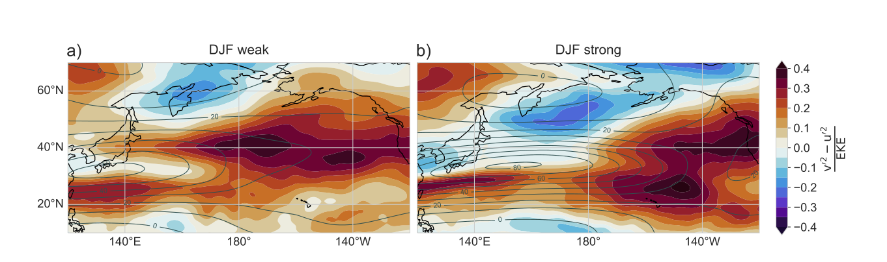
图 S3 北太平洋弱急流 (a) 与强急流 (b) 时次的涡动取向度量 v^{′}^{2}-u^{′}^{2} 相对 EKE 归一化（填色）以及 250 hPa 上 10 d 低通滤波纬向风（U，灰色等值线）。
Figure S3 Eddy orientation measure, v′2 − u′2 normalized by EKE (shading) and the 10-d low-pass filtered zonal wind on 250 hPa (U, gray contours) for weak (a) and strong (b) jet timesteps in the NP.
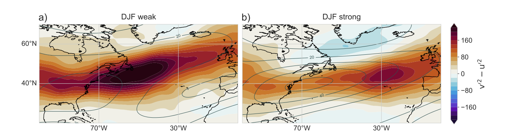
图 S4 北大西洋弱急流 (a) 与强急流 (b) 时次未归一化的涡动取向度量 v^{′}^{2}-u^{′}^{2}（填色）以及 250 hPa 上 10 d 低通滤波纬向风（U，灰色等值线）。
Figure S4 Unnormalized eddy orientation measure, v′2 − u′2 (shading) and the 10-d low-pass filtered zonal wind on 250 hPa (U, gray contours) for weak (a) and strong (b) jet timesteps in the NA.
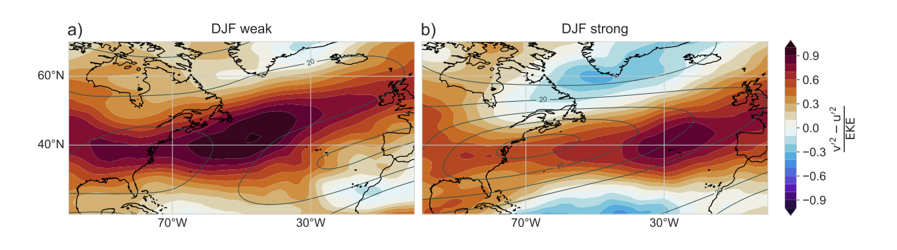
图 S5 同图 S3，但针对北大西洋。
Figure S5 As Fig. S3 but for the NA.
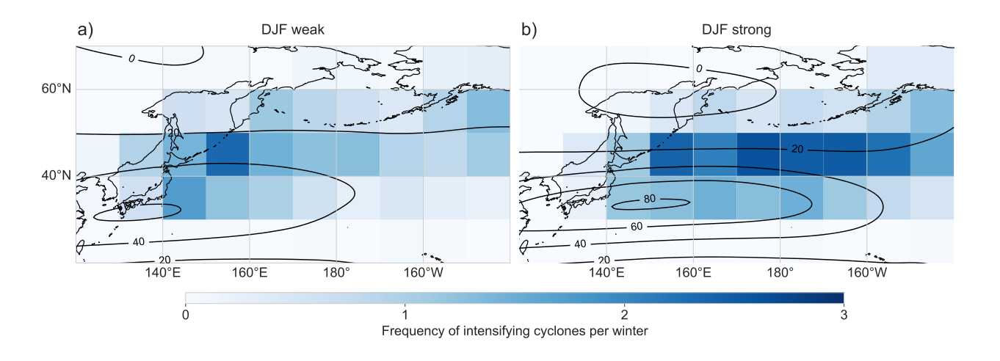
图 S6 北太平洋 250 hPa 上 10 d 低通滤波纬向风（U）以及气旋在其最大 12 小时加深时次的面积加权年频率。频率分别对属于 U 最弱三分位（左）与最强三分位（右）的时次计算。
Figure S6 10-day low-pass filtered zonal wind at 250 hPa (U) and area-weighted annual frequency of cyclones at their time of maximum 12-hourly intensification in the NP. Frequencies are computed separately for time steps belonging to the weakest (left) and strongest (right) tercile of U.
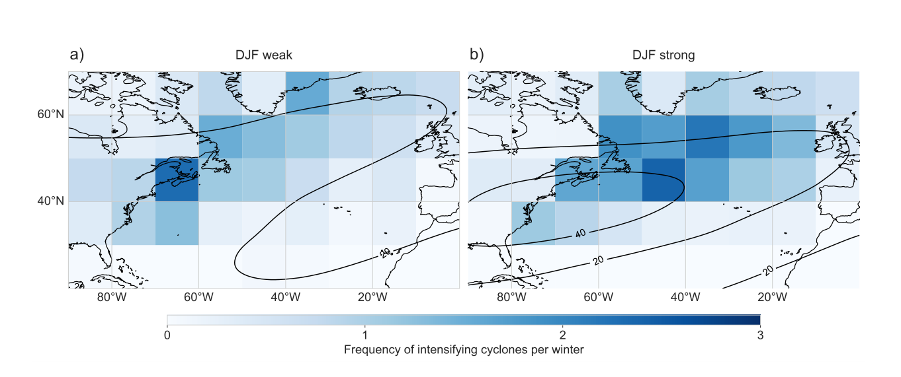
图 S7 同图 S6，但针对北大西洋。
Figure S7 As Fig. S6 but for the NA.
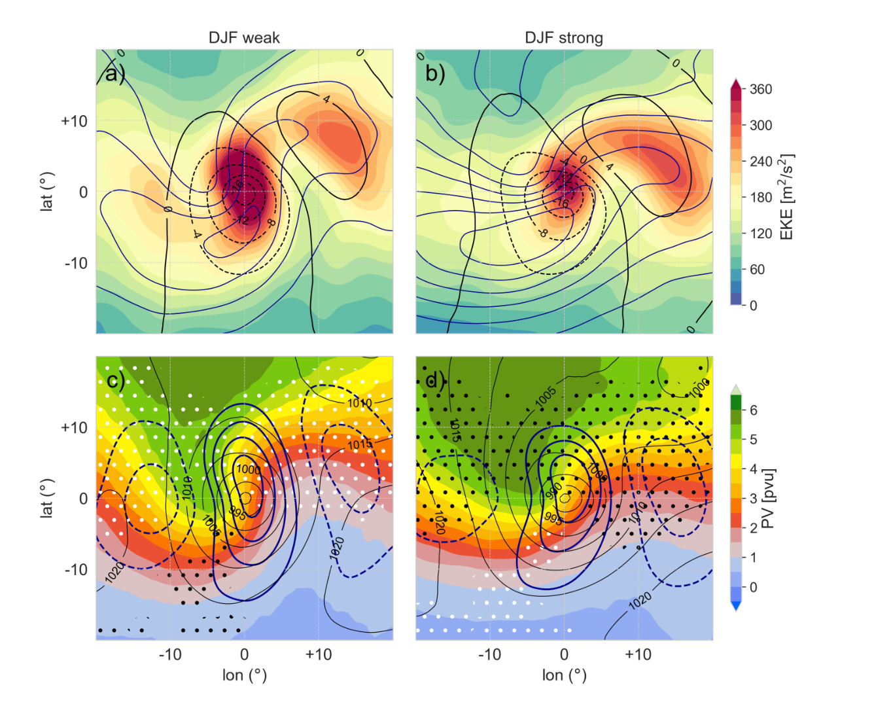
图 S8 北大西洋区域内气旋在其 12 小时最大加深时次的气旋中心合成。给出最大加深发生在弱 U 三分位 (a, c) 与强 U 三分位 (b, d) 时次的气旋。(a, b) 填色为 300 hPa EKE，黑色等值线为高通滤波海平面气压（间隔 4 hPa），蓝色等值线为 250 hPa 总动能（间隔 200 m^{2} s^{−2}）。最内侧总动能等值线在 (a) 为 1400 m^{2} s^{−2}，在 (b) 为 2200 m^{2} s^{−2}。(c, d) 填色为 320 K 位涡，黑色等值线为海平面气压（间隔 5 hPa），蓝色等值线为 300 hPa 高通滤波经向风（间隔 5 m s^{−1}）。相对全部 DJF 气旋 PV 分布、在 1% 水平上显著的正（负）PV 距平分别以黑（紫）点表示。
Figure S8 Cyclone-centered composites of cyclones at their time step of maximal 12-h intensification in the NA domain. Shown are cyclones with maximal intensification during time steps belonging to the weak (a,c) and strong U (b,d) terciles. (a,b) show the 300 hPa EKE in shading, the high-pass filtered SLP in black contours (every 4 hPa) and the total kinetic energy at 250 hPa in blue contours (every 200 m2 s−2). The innermost total kinetic energy contour is 1400 m2 s−2 in (a) and 2200 m2 s−2 in (b). (c,d) show PV on 320 K in shading, SLP in black contours (every 5 hPa), and the high-pass filtered meridional wind at 300 hPa in blue contours (every 5 m s−1). The significance of a positive (negative) PV anomaly with respect to the PV distribution of all DJF cyclones on a 1% level is shown by black (violet) stippling.